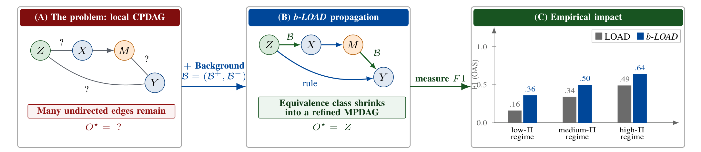
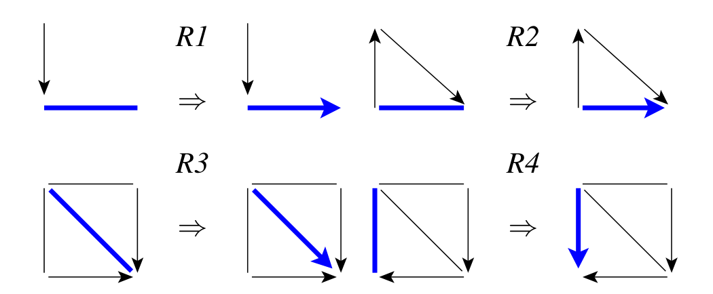
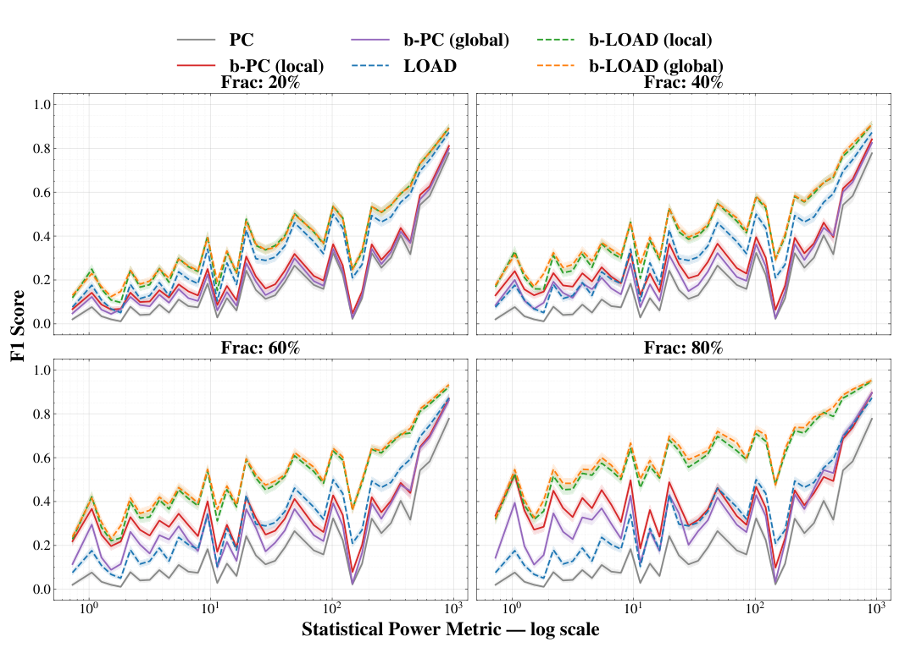
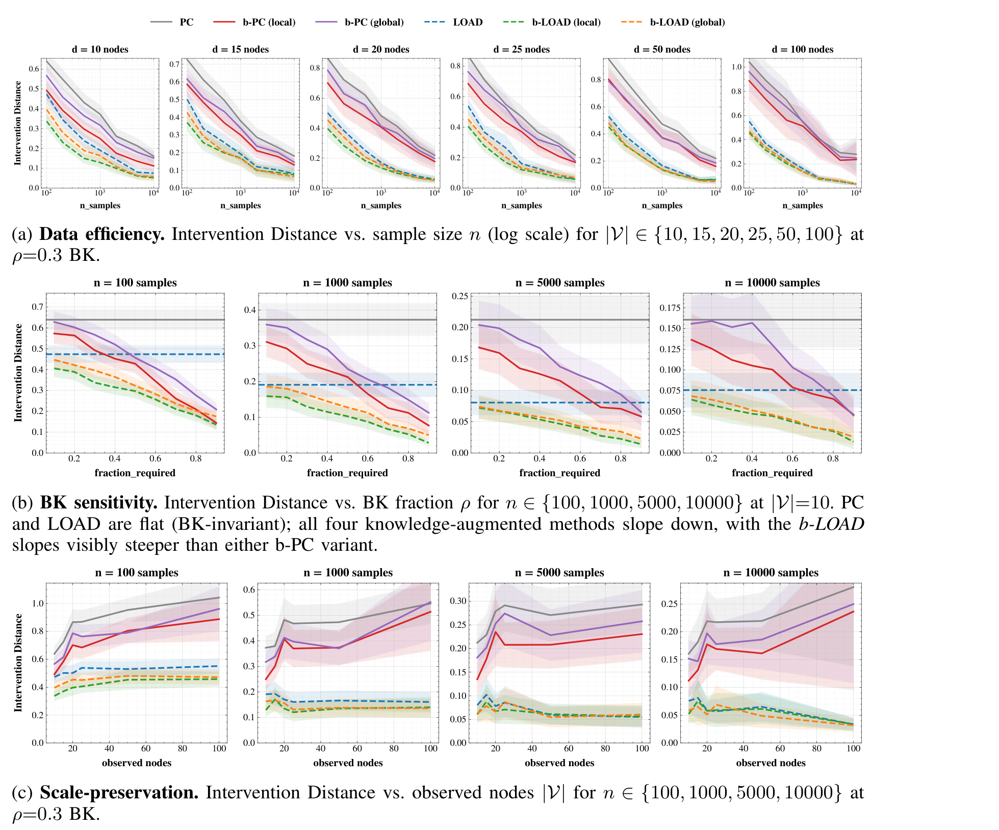
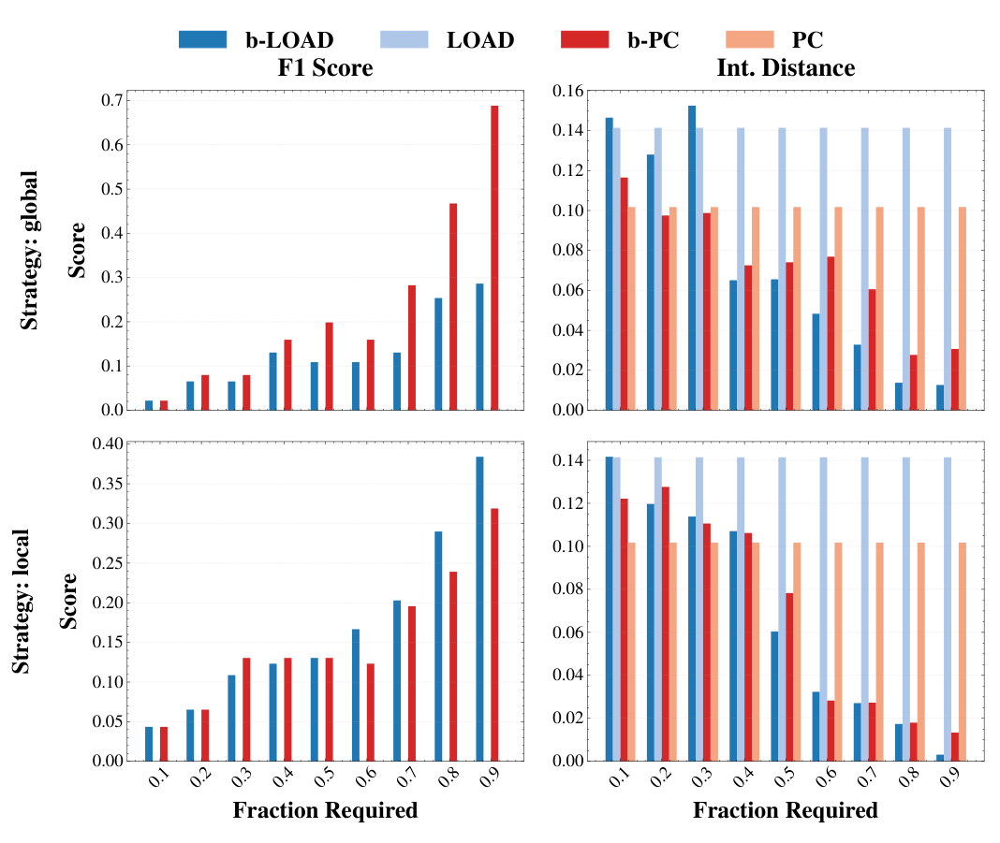
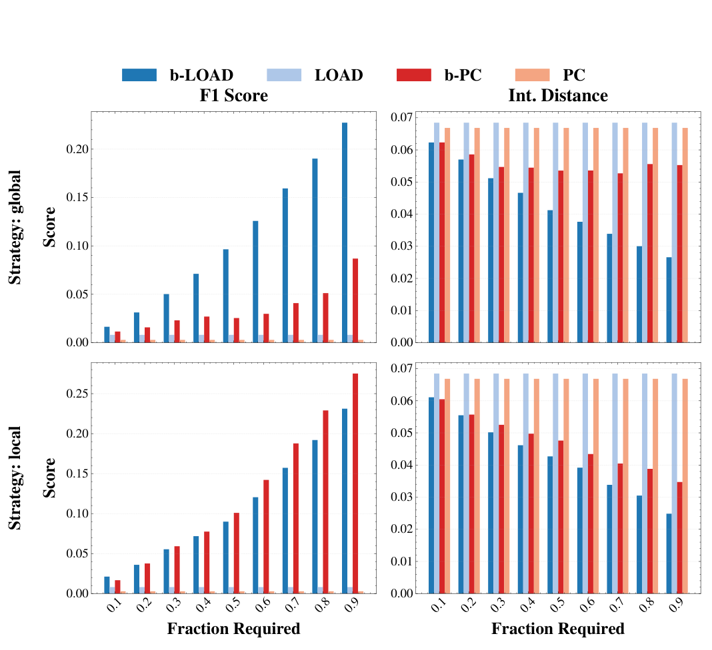
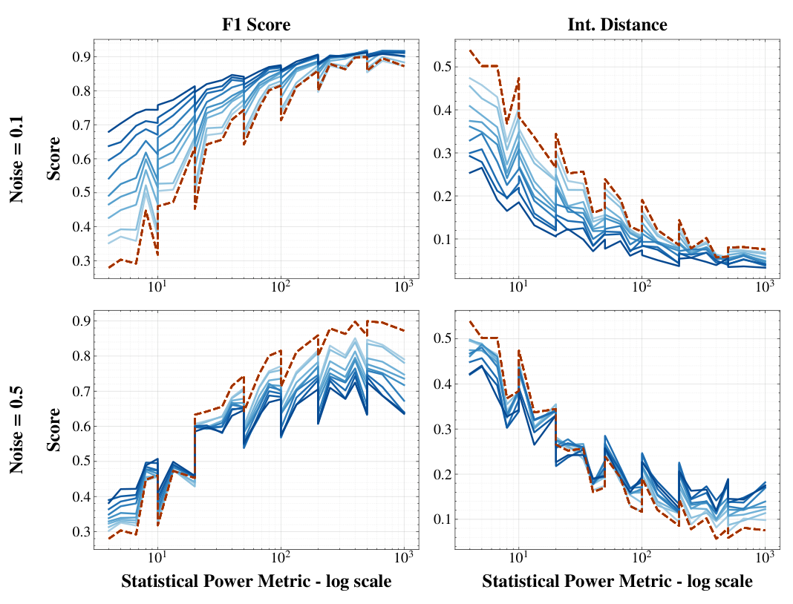

본 포스트는 Université Paris-Saclay(LISN, CNRS, CentraleSupélec)와 INSA Rouen Normandy(LITIS)의 Seong Woo Ahn 외 5인이 발표한 논문 Knowledge-Informed Local Causal Discovery of Optimal Adjustment Sets(arXiv:2607.04447v1 [cs.LG], 2026년 7월 5일)를 바탕으로, 논문을 처음 읽는 독자도 논리적 흐름을 따라갈 수 있도록 재구성한 것입니다. 이 논문은 Schubert et al. (2025a)의 LOAD를 직접적인 출발점으로 삼고 있으므로, 앞서 정리한 Local Causal Discovery for Statistically Efficient Causal Inference 포스트와 함께 읽으시면 맥락이 훨씬 선명해집니다.
논문 정보 (Paper Information)
- 제목: Knowledge-Informed Local Causal Discovery of Optimal Adjustment Sets
- 저자: Seong Woo Ahn, Alessandro Leite, José Lucas De Melo Costa, Fabrice Popineau, Bich-Liên Doan, Arpad Rimmel
- 소속: Laboratoire Interdisciplinaire des Sciences du Numérique(LISN), Université Paris-Saclay / CNRS / CentraleSupélec, France · LITIS UR 4108, INSA Rouen Normandy, University of Rouen Normandy, France
- 출처: arXiv:2607.04447v1 [cs.LG], 2026년 7월 5일 (Preprint)
- 교신저자: seong-woo.ahn@universite-paris-saclay.fr
- 코드:
https://anonymous.4open.science/r/b-LOAD/README.md - 키워드: 인과 발견(causal discovery), 국소 인과 발견(local causal discovery), 최적 조정집합(optimal adjustment set), 배경 지식(background knowledge), 마르코프 동치류(Markov equivalence class), MPDAG, Meek 규칙(Meek’s rules)
한 줄 요약 (TL;DR)
“배경 지식은 학습이 끝난 뒤 덧칠하는 것이 아니라, 국소 탐색의 궤적 자체를 몰고 가야 한다.”
국소 인과 발견은 전역 구조 학습의 확장성 문제를 해결하지만, 표본이 적거나 구조가 복잡하면 학습된 CPDAG에 무향 엣지가 잔뜩 남아 인과효과가 아예 식별되지 않습니다. 이 논문은 LOAD(Schubert et al., 2025a)에 필수 엣지 형태의 배경 지식 \(\mathcal{B}^{+}\)를 주입한 b-LOAD를 제안합니다. 핵심 설계는 배경 지식을 사후 보정으로 쓰지 않고 ① 국소 그래프의 초기화 시드로 심고, ② 매 국소 갱신 뒤 다시 강제하며, ③ Meek 4규칙 폐포로 데이터 기반 방향과 함께 전파하고, ④ 그 결과에 맞춰 탐색 프론티어를 매번 재계산하는 것입니다. 이 절차가 마르코프 동치류를 단조적으로(monotonically) 좁히고, 데이터만으로는 식별 불가능하던 질의까지 엄밀히 확장함을 증명하며, 합성 데이터와 두 개의 생물학 벤치마크(Sachs, DREAM4)에서 특히 데이터가 부족한 저-\(\Pi\) 영역에서 큰 이득을 확인합니다.
초록 (Abstract)
논문이 다루는 문제와 기여를 초록 수준에서 먼저 정리해 보겠습니다.
- 문제 설정: 국소 인과 발견(local causal discovery)은 전역 구조 학습의 확장 가능한(scalable) 대안입니다. 그러나 데이터가 희소한 상황에서는 유효한 조정집합을 찾아내는 데 어려움을 겪습니다. 그 원인은 셋입니다.
- 유한 표본 불확실성(finite-sample uncertainty): 조건부 독립(CI) 검정이 신뢰할 수 없게 됩니다.
- 불완전한 국소 이웃(incomplete local neighborhoods): 국소 탐색이 구조적으로 중요한 노드를 아예 방문하지 못합니다.
- 해소되지 않은 마르코프 동치(unresolved Markov equivalence): 방향이 정해지지 않은 엣지가 남습니다.
- 기회: 많은 응용 도메인이 구조화된 배경 지식(큐레이션된 지식 그래프, 도메인 제약 등)을 제공하지만, 이를 국소 인과 발견 파이프라인에 통합하려는 시도는 아직 제한적입니다.
- 제안: b-LOAD — LOAD(Schubert et al., 2025a)의 지식 정보화(knowledge-informed) 확장을 제안합니다.
- 사전 엣지 제약을 국소 구조 학습 절차 자체에 직접 통합합니다.
- Meek 규칙을 이용해 탐색 프론티어를 동적으로 확장합니다.
- 그 결과 관련 국소 부분그래프 위에서 지식 제약 MPDAG(maximally partially directed acyclic graph)를 얻습니다.
- 이 전략은 사전 지식이 끌어들인 구조적으로 중요한 노드가 국소 탐색에서 배제되는 것을 방지합니다.
- 이론: 배경 지식이 건전(sound)하다는 전제 하에 이 절차가 허용 동치류를 단조적으로 정련(monotonically refine)하고, 식별 가능한 인과 질의의 집합을 넓힐 수 있음을 증명합니다. 즉 관측 조건부 독립 정보만으로는 식별할 수 없던 최적 조정집합을 복원할 수 있습니다.
- 실험: 순수 데이터 주도 기준선과 표준적인 지식 증강 기준선 모두에 대해 하류(downstream) 인과효과 추정을 개선하며, 특히 데이터가 희소하고 구조적으로 복잡한 영역에서 그렇습니다. 실제 생물학 네트워크에서는 국소적으로 겨냥된 사전 지식이 가장 큰 이득을 주고, 중간 정도의 구조적 잡음에서도 이득이 유지됩니다.

I. 서론 (Introduction)
I.1 왜 상관이 아니라 개입인가
현대 AI 시스템은 통계적 연관성(statistical association)을 포착하는 데 탁월하지만, 많은 과학적·고위험 응용은 행동의 결과에 대한 추론을 요구합니다.
- 예측 모형은 상관을 이용합니다.
- 반면 역학(epidemiology), 경제학, 의학 같은 분야는 “어떤 개입을 했다면 무슨 일이 일어났을까”라는 반사실적(counterfactual) 질문에 답해야 합니다(Pearl, 2009; Pearl & Mackenzie, 2018).
인과추론은 바로 이 전환을 위한 형식적 틀을 제공합니다. 유향 비순환 그래프(DAG)가 인과 구조의 표준 표현이고(Spirtes et al., 2000; Pearl, 2009), 그래프를 알고 있다면 인과효과는 조정집합(adjustment set) 같은 그래프 기준(Pearl, 1993; Perković et al., 2018)이나 CPDAG의 마르코프 동치류 위에서 동작하는 IDA 추정량(Maathuis et al., 2009)으로 식별할 수 있습니다.
그러나 현실에서 인과 그래프는 관측 데이터로부터 추론해야 합니다. 여기서부터 문제가 시작됩니다.
I.2 국소 인과 발견의 약속과 그 한계
인과 구조 학습 방법들은 데이터로부터 DAG의 동치류를 복원하지만, 고차원에서 근본적인 확장성 한계에 부딪힙니다. 탐색 공간의 크기가 노드 수에 대해 초지수적(super-exponential)이기 때문입니다.
- 국소 인과 발견은 관심을 목표 변수와 그 이웃(전형적으로 마르코프 블랭킷)으로 제한해 이 문제를 완화합니다(Pellet & Elisseeff, 2008; Wang et al., 2014; Margaritis & Thrun, 2000; Tsamardinos et al., 2003; Aliferis et al., 2010).
- 그러나 국소성은 대가를 치릅니다. 얻어지는 CPDAG는 방향이 약하게만 결정된(weakly oriented) 경우가 많고, 특히 데이터가 희소하거나 구조가 복잡한 영역에서 그렇습니다. 방향이 없으면 인과효과 식별 자체가 불가능합니다.
Schubert et al. (2025a)의 LOAD(Local Optimal Adjustments Discovery)는 이 한계를 정면으로 다룹니다. LOAD는 점근 추정 분산을 최소화하는 최적 조정집합(Henckel et al., 2022)을 국소 구조만으로 복원합니다.
- LOAD는 근본적으로 데이터 주도(data-driven)입니다. 저표본 영역에서는 학습된 CPDAG에 무향 엣지가 대량으로 남고, 인과효과는 식별 불가능 상태로 방치됩니다.
- LOAD의 실증 평가는 대체로 합성 Erdős–Rényi 그래프에, 그것도 표본 수가 변수 수를 넉넉히 웃도는 설정에 한정되어 있습니다. 이는 정작 인과효과 추정이 절실한 배치 시나리오와 어긋난 설정입니다.
- 생의학 응용에서는 정반대입니다. 유전자 조절 네트워크나 단백질 신호 네트워크는 수백 개의 변수에 대해 그와 비슷하거나 더 적은 수의 관측치를 가집니다. 표준적인 \(n \gg d\) 가정이 뒤집히고, CI 기반 CPDAG는 식별이 무너지는 약하게 방향지어진 영역으로 내몰립니다.
I.3 비어 있는 자리: 국소 발견 × 배경 지식
동시에, 많은 응용 도메인은 제한된 관측 데이터와 풍부한 구조화된 사전 지식(큐레이션된 지식 그래프, 도메인 제약 등)을 함께 가지고 있습니다. 이들은 부분적인 인과 관계를 부호화하며, 방향 정보의 자연스러운 원천입니다.
- 이론적으로는 배경 지식을 인과 그래프에 통합하는 방법이 잘 확립되어 있습니다(Meek, 1995).
- 그러나 최적 조정집합 식별을 목표로 하는 국소 발견 파이프라인 안에서의 활용은 거의 탐색되지 않은 채 남아 있습니다.
이 빈자리를 메우는 것이 b-LOAD(Background knowledge-augmented LOAD)입니다.
I.4 핵심 설계 결정
논문의 핵심 설계 결정은 다음 한 문장으로 요약됩니다.
배경 지식을 사후 정련(post-hoc refinement)이 아니라 국소 구조 학습 절차 자체에 직접 통합한다.
구체적으로는 이렇습니다.
- 필수 엣지 방향(required edge orientations)이 초기화 단계에서 국소 그래프를 시드(seed)합니다.
- 매 국소 갱신 뒤 그 방향이 다시 강제(re-impose)됩니다.
- Meek 규칙(Meek, 1995)을 통해 데이터 기반 방향과 함께 전파되어, 관련 국소 부분그래프 위에 지식 제약 MPDAG를 만듭니다.
이 정련은 마르코프 동치류를 엄밀히 축소하면서도 제약 기반 발견의 강건성은 보존하며, 그 결과 인과효과의 식별 가능성 보장을 개선합니다. 얻어진 MPDAG는 곧바로 식별 가능성 판정과 국소 구조 기준을 통한 최적 조정집합 추출에 사용됩니다.
특히 인상적인 사례로, Sachs 단백질 신호 데이터셋(Sachs et al., 2005)에서 LOAD는 유효한 조정집합을 단 하나도 식별하지 못하는 반면, b-LOAD는 도메인 지식을 더했을 때 식별 가능한 효과를 복원해 냅니다.
I.5 기여 (Contributions)
- ① 형식적 보장을 갖춘 지식 정보화 국소 발견. MPDAG 정련을 통해 배경 지식을 국소 인과 발견에 통합하는 원리적 프레임워크를 제시하고, 그 절차가 마르코프 동치류를 엄밀히 정련하며 식별 가능성을 단조적으로 개선하고 데이터만으로는 식별 불가능한 최적 조정집합을 복원할 수 있음을 증명합니다(§IV).
- ② 합성 및 생물학 벤치마크에 걸친 실증 검증. 넓은 통계적 검정력 범위를 아우르는 합성 그래프와 두 개의 생물학 벤치마크(Sachs, DREAM4)에서 지식 정보화 국소 발견이 조정집합 식별을 실질적으로 개선함을 보이며, 가장 큰 이득은 데이터 희소 영역에서 나타납니다(§V).
- ③ 실무자를 위한 처방적 지침. 사전 지식을 언제 어떻게 공급하는 것이 최선인지 특성화합니다. 전역적으로 분포된 제약은 총 식별 건수를 최대화하고, 국소적으로 겨냥된 제약은 가장 예측 가능한 인과효과 추정을 낳습니다. 데이터 영역과 제약 잡음 수준에 연동된 구체적 권고를 제시합니다(§V, §VI).
II. 준비 (Preliminaries)
논문은 Pearl (2009)과 Spirtes et al. (2000)의 관례를 따릅니다.
II.1 인과 그래프와 표기
- 인과 그래프 \(\mathcal{G} := (\mathbf{V}, \mathbf{E})\)는 관측 변수 \(\mathbf{V} = \{X_1, \dots, X_d\}\) 위의 인과 의존성을 부호화합니다.
- 유향 엣지 \(X_i \to X_j\)는 직접적인 인과 영향을 나타냅니다.
- 표기: \(\mathrm{Pa}_{\mathcal{G}}(X_i)\), \(\mathrm{An}_{\mathcal{G}}(X_i)\), \(\mathrm{De}_{\mathcal{G}}(X_i)\), \(\mathrm{Ch}_{\mathcal{G}}(X_i)\), \(\mathrm{Sib}_{\mathcal{G}}(X_i)\)는 각각 \(X_i\)의 부모(parents), 조상(ancestors), 후손(descendants), 자식(children), 형제(siblings) 집합입니다.
- 인접(adjacency): \(A \sim B\)는 \(A\)와 \(B\) 사이에 (어떤 종류든) 엣지가 있음을, \(A \not\sim B\)는 없음을 뜻합니다.
- 인과 그래프는 DAG로 가정합니다(Pearl, 2009; Spirtes et al., 2000).
- 마르코프 가정과 충실성(faithfulness) 가정 하에서, 데이터의 조건부 독립은 \(\mathcal{G}\)의 d-분리(d-separation) 진술과 정확히 대응합니다.
이 두 가정은 “통계”와 “그래프” 사이의 사전(dictionary)입니다.
- 마르코프: 그래프에서 d-분리되면 → 데이터에서 독립이다. (그래프 → 통계)
- 충실성: 데이터에서 독립이면 → 그래프에서 d-분리된다. (통계 → 그래프)
둘이 함께 있어야 CI 검정 결과로부터 그래프 구조를 되읽을 수 있습니다. 뒤에서 b-LOAD가 “완전한 CI 검정” 하에 건전·완전하다고 주장할 때, 그 주장의 토대가 바로 이 사전입니다. 반대로 유한 표본에서 CI 검정이 흔들리면 이 사전이 부분적으로 깨지고, 그 틈을 배경 지식이 메우는 것이 이 논문의 전략입니다.
II.2 마르코프 동치와 CPDAG, 그리고 MPDAG
여러 DAG가 동일한 조건부 독립을 부호화할 수 있고, 그런 DAG들은 관측 데이터만으로는 구별할 수 없습니다.
- 마르코프 동치류(Markov equivalence class, MEC): 같은 조건부 독립을 부호화하는 DAG들의 집합입니다.
- CPDAG: MEC의 유일한 표현으로, 동치류 내 모든 DAG와 같은 골격(skeleton)과 같은 v-구조를 공유하는 혼합 그래프입니다(Andersson et al., 1997; Hauser & Bühlmann, 2012). 여기서 v-구조는 비차폐 충돌자(unshielded collider) \(X_i \to X_k \leftarrow X_j\) (\(X_i \not\sim X_j\))를 말합니다.
- MPDAG(maximally partially directed acyclic graph): 배경 지식이 추가적인 엣지 방향을 제약할 때, 동치류는 MPDAG로 한 단계 더 정련됩니다(Meek, 1995; Wienöbst et al., 2021). MPDAG는 데이터와 사전 제약 양쪽에 모두 부합하는 DAG들만을 표현합니다.
즉 이 논문의 무대는 다음 포함 관계 위에 있습니다.
\[ \underbrace{\{\text{모든 DAG}\}}_{\text{사전 정보 없음}} \;\supsetneq\; \underbrace{[\mathcal{C}]}_{\text{CPDAG (데이터)}} \;\supsetneq\; \underbrace{[\mathcal{M}]}_{\text{MPDAG (데이터} + \mathcal{B})} \;\supseteq\; \{\mathcal{G}\} \]
동치류가 좁아질수록 식별 가능한 질의가 늘어납니다. b-LOAD의 이론적 주장(§IV의 Proposition 1)은 정확히 이 포함 관계가 엄밀한(strict) 것임을 보이는 데 있습니다.
II.3 인과효과와 조정집합
인과추론의 중심 목표는 개입 \(do(X = x)\)(Pearl, 1995; 2009) — \(X\)를 외생적으로 값 \(x\)로 설정하는 것 — 이 결과 \(Y\)에 미치는 효과를 관측 데이터로부터 추정하는 것입니다.
- 인과 그래프를 알고 있다면, 일반화 조정 기준(generalized adjustment criterion)(Perković et al., 2018; Shpitser et al., 2010; van der Zander et al., 2019)이 유효한 조정을 낳는 공변량 집합의 완전한 특성화를 제공합니다. 이 특성화는 DAG, CPDAG, MAG, PAG에 걸쳐 적용됩니다.
- 유효 조정집합들 가운데, 최적 조정집합(optimal adjustment set) \(O^{\star}\)는 공변량 조정 추정량의 점근분산을 최소화하여 통계적 효율성을 높입니다(Henckel et al., 2022; Witte et al., 2020; Rotnitzky & Smucler, 2020).
- 그러나 \(O^{\star}\)를 식별하려면 충분한 엣지 방향 정보를 갖춘 그래프 표현이 필요합니다.
마지막 문장이 이 논문 전체의 병목입니다. “충분한 방향 정보”를 데이터가 주지 못할 때, 그것을 어디서 조달할 것인가 — 답이 배경 지식입니다.
원 논문은 최적 조정집합의 구성을 인용으로만 처리하고 알고리즘에서 OPTIMALADJSET 서브루틴으로 호출합니다(van der Zander et al., 2019; Witte et al., 2020). 배경으로 그 구성만 짧게 덧붙입니다.
Witte et al. (2020)의 금지 사영(forbidden projection) 관점에서, 순응적 그래프 \(\mathcal{G}\)와 처치 \(X\)·결과 \(Y\)에 대해 조정하면 안 되는 노드들(= \(X\)의 가능한 후손들)을 제거하고 그들을 관통하던 유향 경로를 지름길 엣지로 이어 붙인 그래프 \(\tilde{\mathcal{G}}^{X,Y}\)를 만들면, 최적 조정집합은
\[ O^{\star} = \mathrm{Pa}_{\tilde{\mathcal{G}}^{X,Y}}(Y) \setminus \{X\} \]
로 읽힙니다. 즉 “금지 사영에서 결과의 부모”입니다. 이 식이 성립하려면 \(Y\)로 들어오는 엣지들의 방향이 확정되어 있어야 하고, 바로 그 지점에서 배경 지식이 결정적인 역할을 합니다.
II.4 Meek의 방향 결정 규칙 (Meek’s Orientation Rules)
v-구조가 식별된 뒤, 네 개의 결정론적 규칙(Meek, 1995)이 임의의 순서로 소진될 때까지(exhaustively) 적용되어 엣지 방향을 전파하고 동치류의 유일한 CPDAG를 산출합니다.

각 규칙은 새로운 v-구조나 유향 순환(directed cycle)이 생기는 것을 막기 위해 무향 엣지에 방향을 부여합니다. 논문의 서술을 따라 정리하면 다음과 같습니다.
| 규칙 | 전제 | 결론 | 막는 것 |
|---|---|---|---|
| R1 | \(\alpha \to \beta\), \(\beta - \gamma\), \(\alpha \not\sim \gamma\) | \(\beta \to \gamma\) | 새로운 v-구조 \(\alpha \to \beta \leftarrow \gamma\) |
| R2 | \(\alpha \to \beta \to \gamma\), \(\alpha - \gamma\) | \(\alpha \to \gamma\) | 유향 순환 \(\alpha \to \beta \to \gamma \to \alpha\) |
| R3 | 두 유향 경로가 공통 노드로 수렴 (비차폐 배치) | 남은 무향 엣지 방향 결정 | 가짜 충돌자(spurious collider) |
| R4 | 두 유향 경로가 공통 노드로 수렴 (또 다른 배치) | 남은 무향 엣지 방향 결정 | 가짜 충돌자 |
이 네 규칙은 배경 지식을 통합할 때에도 동일하게 적용됩니다. 사전 제약으로부터 강제된 방향들이 R1–R4를 통해 전파되어, 논리적으로 함의되는 모든 방향을 도출하고 그 결과 MPDAG를 얻습니다.
여기가 b-LOAD의 지렛대입니다. 사전 지식으로 엣지 하나를 방향지으면, Meek 규칙이 그것을 연쇄적으로 증폭시켜 여러 엣지의 방향을 함께 확정합니다. Figure 1(B)에서 \(\mathcal{B}\) 라벨이 붙은 초록 엣지 두 개가 파란 “rule” 엣지를 만들어 내는 장면이 정확히 이 증폭입니다.
IV. 방법 (Method)
IV.A 이론적 동기 (Theoretical Motivations)
b-LOAD의 설계를 결정한 세 가지 관찰이 있습니다. 이 셋은 각각 “왜 배경 지식이 필요한가 / 왜 4규칙이어야 하는가 / 왜 사후 보정으로는 안 되는가”에 대응합니다.
(i) 최적 조정에는 방향이 필요하다
최적 조정집합 이론(Henckel et al., 2022)은 충분히 방향지어진 그래프를 요구합니다.
순응성 조건(amenability condition; Perković et al., 2018): 처치 \(X\)에서 결과 \(Y\)로 가는 모든 진(proper) 인과 경로가 \(X\)에서 나가는 유향 엣지로 시작해야 한다.
배경 지식은 바로 그 빠진 방향을 공급합니다. 그것도 데이터만으로는 방향이 미결정되는 영역 — 유한 표본, 조밀한 국소 이웃 — 에서 정확히 그렇게 합니다.
(ii) MPDAG 조작에는 4규칙 Meek 폐포가 필요하다
배경 제약 하에서 CPDAG를 조작하려면 Perković et al. (2017)의 4규칙 폐포로 최대로 방향지어진 MPDAG를 얻어야 합니다.
왜 3규칙으로는 부족한가를 짚어 두겠습니다.
- 3규칙 폐포(R1–R3)는 v-구조와 비순환성을 전파하지만, 두 개의 유향 경로가 공통 노드로 수렴할 때 함께 함의되는 방향을 놓칩니다. 그것을 포착하는 것이 R4입니다.
- 그리고 배경 지식 엣지가 만들어 내는 것이 정확히 그런 배치입니다. 즉 R4를 생략한 구현에서는 배경 지식의 이득 중 상당 부분이 그냥 사라집니다. Perković et al. (2017)이 “구현에서 R4가 자주 누락된다”고 지적한 이유이자, 이 논문이 그 경고를 명시적으로 받아 안는 이유입니다.
(iii) 국소 탐색은 모든 방향 결정에 의해 다시 몰려야 한다
Zheng et al. (2026)의 Theorem 1은, MB-by-MB 스타일의 국소 탐색이 배경 지식 하에서도 건전하게 유지되려면 — 확장할 노드들의 프론티어(frontier)를 매 방향 결정 단계마다 재계산해야 한다는 조건이 필요함을 확립합니다.
따라서 사전 지식은 탐색의 출력을 덧칠(patch)하는 것이 아니라 탐색 궤적 자체를 몰아야(drive) 합니다. 학습이 끝난 CPDAG에 사후 방향 결정 패스를 한 번 돌리는 것으로는, 배경 지식이 유도한 방향을 통해 도달했을 노드들을 결코 복원할 수 없습니다.
이 세 재료를 Algorithm 1에서 합성한 결과가 다음의 Lemma 1과 Proposition 1입니다.
Lemma 1 (국소 MPDAG 발견의 건전성과 완전성)
\(\mathcal{G}\)를 변수 집합 위의 참 DAG라 하고 인과충분성(causal sufficiency)을 가정합니다. \(D\)를 \(\mathcal{G}\)에 대해 마르코프적이고 충실한 분포로부터 생성된 관측 데이터, \(\mathcal{B}\)를 유효한 배경 지식의 집합이라 합시다. \(\mathcal{G}^{*}\)를 \(\mathcal{B}\)에 의해 제약된 \(\mathcal{G}\)의 마르코프 동치류를 나타내는 참 MPDAG라 하고, \(X\)를 목표 변수라 합시다. 모든 조건부 독립이 정확히 식별된다고 가정합니다.
b-LOAD의 국소 발견 단계가 입력 \((X, D, \mathcal{B})\)로 실행되어 출력 그래프 \(\mathcal{G}_{\mathrm{out}}\)을 산출한다면, \(X\) 및 \(\mathcal{G}^{*}\)에서 \(X\)와 무향 경로로 연결된 모든 노드 \(Z\)에 대해 다음이 성립합니다.
\[ \mathrm{Pa}(Z, \mathcal{G}_{\mathrm{out}}) = \mathrm{Pa}(Z, \mathcal{G}^{*}) \tag{1} \]
\[ \mathrm{Ch}(Z, \mathcal{G}_{\mathrm{out}}) = \mathrm{Ch}(Z, \mathcal{G}^{*}) \tag{2} \]
\[ \mathrm{Sib}(Z, \mathcal{G}_{\mathrm{out}}) = \mathrm{Sib}(Z, \mathcal{G}^{*}) \tag{3} \]
세 등식이 말하는 것을 풀어 보겠습니다. \(\mathcal{G}_{\mathrm{out}}\)은 국소적으로만 학습된 그래프인데, 관련된 노드들 주변에서는 참 MPDAG \(\mathcal{G}^{*}\)와 부모·자식·형제 관계가 정확히 일치합니다. 즉 국소 학습이 전역 학습의 근사가 아니라, 관련 영역에서는 정확히 같은 답을 준다는 뜻입니다. 이것이 국소성을 채택하고도 이론적 보장을 잃지 않는 근거입니다.
Lemma 1이 함의하는 바는 b-LOAD가 인과효과나 최적 조정집합을 식별하지 못하는 어떤 실패도 국소 발견의 오류 때문이 아니라 축소 불가능한 마르코프 동치(irreducible Markov equivalence) — 즉 \(\mathcal{G}^{*}\)에서조차 무향으로 남는 엣지 — 때문이라는 것입니다.
이것은 대단히 유용한 형태의 보장입니다. 실패의 원인이 알고리즘이 아니라 정보의 부족으로 못 박히기 때문에, 처방이 곧바로 따라 나옵니다. 동치류를 더 좁히면 된다 — 그리고 배경 지식이 정확히 그 일을 합니다. 다음 Proposition 1이 이를 형식화합니다.
Proposition 1 (배경 지식은 식별 가능성을 개선한다)
\(\mathcal{C}\)를 \(\mathcal{G}\)의 마르코프 동치류의 CPDAG라 하고, \(\mathcal{M} = \mathcal{M}(\mathcal{C}, \mathcal{B})\)를 유효한 배경 지식 \(\mathcal{B} \neq \emptyset\)를 Meek 규칙 R1–R4를 통해 통합하여 얻은 MPDAG라 합시다. \((X, Y)\)를 인과 질의라 하면 다음이 성립합니다.
- (i) 단조적 정련 (Monotone refinement). \(\mathcal{M}\)이 표현하는 동치류는 \(\mathcal{C}\)가 표현하는 동치류의 진부분집합(strict subset)입니다. 즉 \(\mathcal{M}\)과 부합하는 모든 DAG는 \(\mathcal{C}\)와도 부합하지만, 역은 성립하지 않습니다.
- (ii) 개선된 식별 가능성 (Improved identifiability). \(X\)의 \(Y\)에 대한 인과효과가 \(\mathcal{C}\)에서 식별 가능하면(즉 \(\mathcal{C}\)가 \((X,Y)\)에 대해 순응적이면), \(\mathcal{M}\)에서도 여전히 식별 가능합니다. 역으로, \(\mathcal{C}\)에서는 식별 불가능하지만 \(\mathcal{M}\)에서는 식별 가능해지는 배치가 존재하며, 따라서 b-LOAD가 답을 반환하는 질의의 집합이 엄밀히 확장됩니다.
- (iii) 최적 조정집합의 보존 (Optimal adjustment set preservation). \(O^{\star}\)가 \(\mathcal{C}\)로부터 식별된 최적 조정집합이라면, \(O^{\star}\)는 \(\mathcal{M}\)에서도 여전히 유효 조정집합입니다. 나아가 \(\mathcal{M}\)의 추가적인 방향 결정은 \(\mathcal{C}\)만으로 얻을 수 있는 것보다 엄밀히 더 작거나 분산이 더 낮은 최적 조정집합을 낳을 수 있습니다.
세 항이 각각 방어하는 것은 다음과 같습니다.
| 항 | 주장 | 방어하는 우려 |
|---|---|---|
| (i) | 동치류가 엄밀히 줄어든다 | “배경 지식을 넣어도 아무 변화가 없는 것 아닌가?” |
| (ii) | 식별 가능성이 줄지 않고, 때로는 늘어난다 | “방향을 강제하다가 오히려 식별 가능하던 것을 잃지 않나?” |
| (iii) | 기존 \(O^{\star}\)가 여전히 유효하고, 때로는 더 좋아진다 | “조정집합의 유효성이 깨지지 않나?” |
즉 Proposition 1은 “손해 볼 일은 없고 이득 볼 여지는 있다”는 형태의 단조성 보장이며, 이 단조성이야말로 실무자가 사전 지식을 안심하고 투입할 수 있게 만드는 근거입니다. 다만 이 보장은 전적으로 “\(\mathcal{B}\)가 유효하다”는 전제 위에 서 있습니다 — 이 전제가 깨지면 어떻게 되는지는 §VI와 부록에서 다룹니다.
IV.B 배경 지식의 모형화 (Modelling Background Knowledge)
작업 가정: 부분적이지만 완벽한 지식
논문은 배경 지식을 참 인과 그래프의 부분적이고 전적으로 옳은 스냅샷으로 모형화합니다. b-LOAD에 공급되는 어떤 제약도 데이터 생성 DAG \(\mathcal{G}\)와 부합합니다.
형식적으로, 참 DAG \(\mathcal{G} = (\mathbf{V}, \mathbf{E})\)가 주어졌을 때 배경 지식은 필수 유향 엣지(required directed edges)의 집합
\[ \mathcal{B}^{+} \subseteq \mathbf{E} \]
입니다. 즉 b-LOAD에 공급되는 모든 방향은 \(\mathcal{G}\)의 실제 유향 엣지입니다. 이는 배경 지식 인과 발견 문헌의 표준적인 정확성 가정을 형식화한 것입니다(Meek, 1995; Perković et al., 2017).
논문은 의도적으로 필수 엣지 \(\mathcal{B}^{+}\)에만 국한하고 — 실무에서 큐레이션된 사전 지식의 가장 흔한 형태이기 때문입니다 — 금지 엣지(forbidden edges) \(\mathcal{B}^{-}\)는 데이터 주도 골격 학습 단계에 맡깁니다.
Figure 1(B)에는 \(\mathcal{B} = (\mathcal{B}^{+}, \mathcal{B}^{-})\)로 표기되어 있지만, 본 연구가 실제로 실험하는 것은 \(\mathcal{B}^{+}\)뿐입니다. \(\mathcal{B}^{-}\)에 대한 병렬적 질문(특히 잡음 강건성)은 향후 과제로 명시되어 있습니다.
이 가정의 동기는 경험적입니다. 고도의 전문성을 요하는 응용 도메인에서 큐레이션된 지식 그래프와 전문가가 도출한 제약은, 시스템에 대한 완전한 기술이 아니라 잘 확립된 인과 관계의 부분집합을 부호화하는 것이 전형적입니다. 즉 실무적 한계는 정확성(correctness)이 아니라 포괄 범위(coverage)이며, 이 작업 가정은 바로 그 영역에 충실합니다. 실제 데이터 평가(§V) 역시 정확히 이 영역에서 작동합니다.
그리고 논문은 이 가정에 기대기만 하지 않고 의도적으로 스트레스 테스트합니다. §VI와 부록 A가 \(\mathcal{B}^{+}\)를 통제된 방식으로 오염시켰을 때의 예비 분석을 보고합니다.
\(\mathcal{B}^{+}\)의 두 가지 표집 전략
질의 \((X, Y)\)가 주어졌을 때, 실무자의 사전 지식은 \(\mathcal{G}\)의 어디에 실제로 존재하는가?
이 질문에 답하기 위해 논문은 두 가지 양식화된(stylized) 시나리오를 세웁니다. 둘 다 적격 풀(eligible pool)에서 b-LOAD에 공개되는 엣지의 비율 \(\rho \in (0,1)\)로 매개화됩니다.
| 전략 | \(\mathcal{B}^{+}\)의 표집 대상 | 모사하는 실무자 |
|---|---|---|
| 국소 표집 (Local sampling) | \(X\) 또는 \(Y\)에 인접한 \(\mathbf{E}\)의 엣지들에서 균등 표집 | \(X\)와 \(Y\)의 직접 이웃에 대해 불완전하지만 매우 정확한 도메인 지식을 보유한 실무자 |
| 전역 표집 (Global sampling) | \(X, Y\)에 대한 조건 없이 전체 엣지 집합 \(\mathbf{E}\)에서 균등 표집 | 특정 질의의 변수들을 건드릴 수도, 안 건드릴 수도 있는 일반적인 도메인 지식 그래프에 접근하는 실무자 |
여기서의 “국소 표집(local sampling)”은 국소 인과 발견(local causal discovery)과 다른 개념입니다. 후자는 b-LOAD 알고리즘 자체의 성격을 가리키고, 전자는 배경 지식이 그래프의 어디에서 왔는가를 가리킵니다. 논문도 각주에서 이 혼동을 명시적으로 경계합니다.
따라서 “b-LOAD (local)”은 “국소 알고리즘”이 아니라 “국소적으로 표집된 배경 지식을 쓰는 b-LOAD”를 뜻합니다. b-LOAD는 어느 쪽이든 항상 국소 알고리즘입니다.
두 전략을 함께 두면 사전 지식이 얼마나 많은가(\(\rho\))와 그것이 어디에 있는가(local/global)를 분리해서 볼 수 있고, 이것이 §V 실험의 통제 수단이 됩니다.
IV.C b-LOAD 알고리즘 (The b-LOAD Algorithm)
바깥 루프는 LOAD(Schubert et al., 2025a)의 것을 그대로 씁니다.
- 각 목표 변수 주변에서
LOCALMPDAG로 국소 발견을 호출합니다. - \(X\)가 \(Y\)의 진 조상(proper ancestor)인지 확인합니다.
- 결과 그래프가 \((X, Y)\)에 대해 순응적인지 확인합니다(Perković et al., 2018).
- Henckel et al. (2022)의 기준으로 최적 조정집합을 추출합니다.
배경 지식은 안쪽 절차 LOCALMPDAG의 (a)–(d) 네 지점에서 들어옵니다.
Algorithm 1: b-LOAD
Background knowledge-augmented Local Optimal Adjustment set Discovery
────────────────────────────────────────────────────────────────────────────
Require: 목표 변수 X, Y ; 데이터 D ; CI 오라클 I ; 배경 지식 B⁺
Ensure : 최적 조정집합 O*, 또는 NOTIDENTIFIABLE
// 각 목표 변수 주변에서 지식을 인지하는(knowledge-aware) 국소 발견
1: G_X ← LOCALMPDAG(X, D, B⁺, I)
2: G_Y ← LOCALMPDAG(Y, D, B⁺, I)
3: M_loc ← G_X ∪ G_Y
// 식별 가능성 판정과 최적 조정집합 추출
4: if M_loc 에서 X 가 Y 의 진 조상이 아니면 then
5: return NOTIDENTIFIABLE
6: end if
7: if M_loc 이 (X, Y) 에 대해 순응적이지 않으면 (Perković et al., 2018) then
8: return NOTIDENTIFIABLE
9: end if
10: O* ← OPTIMALADJSET(X, Y, M_loc)
▷ (van der Zander et al., 2019; Witte et al., 2020)
11: return O*
12: procedure LOCALMPDAG(Z, D, B⁺, I)
// (a) 빈 그래프가 아니라 배경 지식으로 초기화한다
13: G ← (V, B⁺) ; DONE ← ∅ ; WAIT ← {Z}
14: while WAIT ≠ ∅ do
15: WAIT 에서 U 를 꺼내고 U 를 DONE 에 추가
16: MB(U) 를 찾고, MB(U) ∪ {U} 위에서 주변 그래프 L_U 를 학습
// (b) BK-보호 갱신: 매 국소 편집 뒤 B⁺ 를 다시 강제한다
17: U 를 포함하는 L_U 의 엣지와 v-구조를 G 에 추가 ; 그 뒤 B⁺ 를 재강제
// (c) MPDAG 를 위한 Meek 4규칙 폐포 (R4 가 필수)
18: G 에 Meek 규칙 R1–R4 를 소진될 때까지 적용 (Figure 2)
// (d) BK-인지 프론티어 확장
19: WAIT ← { U′ ∈ V | G 에서 U′ 가 Z 와 무향 경로로 연결됨 } \ DONE
20: end while
21: return G
22: end procedure
────────────────────────────────────────────────────────────────────────────이제 (a)–(d) 각 지점이 정확히 무엇을 방어하는지 살펴보겠습니다.
(a) 초기화 (Initialization)
국소 그래프를 빈 그래프가 아니라 \(\mathcal{B}^{+}\)로 시드합니다.
- 그 결과 사전 방향들이 첫 v-구조 검사와 첫 Meek 패스에서부터 사용 가능해집니다.
- 즉 사전 방향이 탐색의 출력을 덧칠하는 것이 아니라 탐색 궤적 안으로 들어옵니다.
(b) 보호된 갱신 (Protected updates)
매 마르코프 블랭킷 발견 및 방향 결정 단계 뒤에 \(\mathcal{B}^{+}\)를 작업 그래프에 다시 강제합니다. 이것은 두 가지 목적에 복무합니다.
- 첫째, 삭제 방지. PC 스타일 골격 하위 단계의 유한 표본 오류가 필수 엣지를 지워 버리는 것을 막습니다. 필수 엣지가 사라지면 이후의 Meek 전파가 통째로 무효화됩니다.
- 둘째, 충돌 해소. 데이터 기반 방향과 \(\mathcal{B}^{+}\)의 제약이 충돌할 경우 \(\mathcal{B}^{+}\)의 손을 들어 줍니다. 재강제가 충돌하는 데이터 기반 방향을 덮어쓰므로, 단계 (b) 이후의 작업 그래프는 구성상(by construction) \(\mathcal{B}^{+}\)와 일관됩니다.
\(\mathcal{B}^{+}\)의 재강제가 유향 순환을 만들어 낼 위험은 다음 논증으로 배제됩니다.
- 참 DAG \(\mathcal{G}\)에 대해 \(\mathcal{B}^{+} \subseteq \mathbf{E}\)이므로, \(\mathcal{B}^{+}\)가 고정하는 엣지들의 부분집합 자체가 비순환적입니다.
- 그리고 위의 충돌 해소 규칙이 배경 지식의 강제에 의해 어떤 유향 순환도 생길 수 없음을 보장합니다.
- \(\mathcal{B}^{+}\) 바깥의 엣지들은 데이터 기반 v-구조 탐지와 Meek 전파로 방향이 결정되는데, 둘 다 표준 가정 하에서 건전하고(Zheng et al., 2026, Theorem 1) 규칙의 구성 자체로 비순환성을 보존합니다(Meek, 1995).
(c) Meek 4규칙 폐포 (Four-rule Meek closure)
전파에는 Perković et al. (2017)의 4규칙 폐포를 씁니다.
R4가 하는 일은, 데이터 기반 방향과 배경 지식 기반 방향이 단지 공존하는 데 그치지 않고 서로 복리로 증폭(compound)되어 최대로 방향지어진 MPDAG를 만들도록 하는 것입니다.
(d) 프론티어 확장 (Frontier expansion)
매 전파 단계마다 대기열(wait-list)을 재계산합니다. 이로써 배경 지식이 유도한 방향은 프론티어를
- 줄일 수도 있고(이전에 무향이던 엣지가 방향을 얻어 더 이상 확장할 필요가 없어짐),
- 늘릴 수도 있습니다(새롭게 관련성이 드러난 노드가 편입됨).
이것이 Zheng et al. (2026) Theorem 1의 건전성 조건입니다.
(a) 심고 → (b) 지키고 → (c) 번지게 하고 → (d) 따라가게 한다.
사후 보정 방식(b-PC)이 하는 일은 이 중 (c)뿐입니다. 그것도 이미 고정된 CPDAG 위에서 한 번만 수행하므로 전파 발자국(propagation footprint)이 훨씬 작습니다. §V.B.2에서 b-LOAD가 적은 사전 지식으로부터 훨씬 높은 한계 수익을 뽑아내는 실증적 근거가 바로 이 구조적 차이입니다.
V. 실증 평가 (Empirical Evaluation)
논문은 {전역, 국소} 구조 학습 × {배경 지식 없음, 있음}의 \(2 \times 2\) 설계를 아우르는 세 개의 기준선과 b-LOAD를 비교합니다.
| 방법 | 구조 학습 | 배경 지식 |
|---|---|---|
| PC (Spirtes et al., 2000) | 전역 | 없음 (데이터 주도) |
| b-PC | 전역 | 있음 — PC 결과에 \(\mathcal{B}\)의 Meek 4규칙 전파를 순진하게(naive) 덧붙임 |
| LOAD (Schubert et al., 2025a) | 국소 | 없음 (데이터 주도) |
| b-LOAD (본 연구) | 국소 | 있음 — 지식 정보화 |
이 설계는 b-LOAD의 실증적 이득이 국소 발견에서 오는지, 배경 지식에서 오는지, 아니면 둘의 시너지에서 오는지를 분리해 냅니다. 지식 증강 방법들은 추가로 국소/전역 BK 표집 양쪽에서 평가되며, 모든 실험은 1000개의 랜덤 시드에 대해 수행되어 좁은 신뢰구간을 갖는 평균 추정치를 산출합니다.
V.A 실험 설계 (Experimental Setup)
배경 지식 표집
- §IV.B의 국소·전역 표집 전략을 모든 비율 \(\rho \in \{0.1, 0.2, \dots, 0.9\}\)에서 구현하고, 각 \((\rho, \text{전략})\) 구성을 독립적으로 실행합니다.
- 표집된 엣지 방향은 부록 A의 잡음 강건성 예비 분석을 제외한 모든 구성에서 정확하다고 가정합니다.
평가 지표
논문은 상보적인 두 지표를 보고합니다.
- 최적 조정집합 식별에 대한 F1 점수: 각 방법이 참 최적 조정집합 \(O^{\star}\)를 얼마나 정확히 복원하는가를, 구성 변수들에 대한 정밀도와 재현율의 균형으로 측정합니다.
- 개입 거리(Intervention Distance) (Schubert et al., 2025b): 하류(downstream) 지표로, 목표 \(T\)에서 \(T'\)로의 참 인과효과 \(\Theta_{T,T'}\)와, 반환된 조정집합으로 조정하여 얻은 예측 인과효과 \(\widehat{\Theta}_{T,T'}\) 사이의 거리로 정의됩니다.
- F1은 “조정집합의 구성(composition)”을 채점합니다 — 구조적 질문입니다.
- 개입 거리는 “실무자가 실제로 소비하는 양(quantity)”, 즉 추정된 인과효과를 채점합니다 — 하류 질문이며, 인과 발견의 실제 사용 국면에서 일차적 관심 지표입니다.
둘은 어긋날 수 있습니다. 최적이 아닌 유효 조정집합을 반환하면 F1은 낮아도 추정은 여전히 불편(unbiased)이고 분산만 커지기 때문입니다. §VI에서 이 괴리가 이 논문의 핵심 논점 중 하나로 다시 등장합니다.
통계적 검정력 지표 \(\Pi\)
Kummerfeld et al. (2024)를 따라, 논문은 실험 조건들을 구조적 모수당 통계적 검정력이라는 단일 축으로 요약합니다.
\[ \Pi = \frac{n}{|\mathbf{V}| \cdot d_{\exp}/2} \tag{4} \]
여기서 \(n\)은 표본 수, \(|\mathbf{V}|\)는 관측 변수의 수, \(d_{\exp}\)는 기대 노드 차수(expected node degree)입니다.
분모가 왜 엣지 수의 근사인가를 단계별로 확인해 보겠습니다.
1단계 (악수 보조정리, handshake lemma). 임의의 무향 그래프에서 모든 노드의 차수를 더하면 각 엣지가 정확히 두 번 세어집니다.
\[ \sum_{V \in \mathbf{V}} \deg(V) = 2|\mathbf{E}| \]
2단계 (기대 차수의 정의). 평균 차수를 \(d_{\exp}\)라 하면 \(\sum_{V} \deg(V) = |\mathbf{V}| \cdot d_{\exp}\)입니다. 1단계와 결합하면
\[ |\mathbf{E}| = \frac{|\mathbf{V}| \cdot d_{\exp}}{2} \]
3단계 (해석). 따라서 \(\Pi\)는 “학습해야 할 엣지 하나당 사용 가능한 평균 표본 수”를 나타냅니다. 논문의 각주가 밝히듯 이 근사는 Erdős–Rényi 그래프 \(G(n, d_{\exp}/n)\)에 대해 기댓값 관점에서 정확하며, 실현된 개별 그래프에 대해서도 타이트한 추정치입니다.
- 낮은 \(\Pi\): 데이터가 희소하고 복잡도가 높은 영역 → 순수 데이터 주도 방법이 고전할 것으로 예상되는 구간입니다.
- 높은 \(\Pi\): 유리한 영역 → LOAD와 b-LOAD가 수렴할 것으로 예상되는 구간입니다.
이 지표 덕분에 이질적인 그래프 구성에 걸친 결과들을 하나의 해석 가능한 축 위로 붕괴시킬 수 있습니다.
V.B 합성 실험 (Synthetic Experiments)
데이터 생성
- Erdős–Rényi 모형으로 랜덤 DAG를 생성하며, 세 개의 난이도 축을 세밀하게 통제합니다.
- 노드 수 \(|\mathbf{V}| \in \{10, 15, 20, 25, 50, 100\}\)
- 기대 차수 \(d_{\exp} \in \{2, 3, 4, 5, 6\}\)
- 관측 표본 수 \(n \in \{100, 200, 500, 1000, 2000, 5000, 10000\}\)
- 선형 가우시안 구조 방정식을 사용하며, 엣지 가중치는 \([-1, -0.25] \cup [0.25, 1]\)에서 균등 표집합니다. 0 근처의 효과를 배제하여 참 효과가 사실상 0인 경우로 인해 결과가 흐려지는 것을 막기 위함입니다.
- 각 구성에 대해 인과 질의 \((X, Y)\)는 \(\mathcal{G}\)의 조상 쌍(ancestral pairs)에서 균등 표집합니다.
F1 대 통계적 검정력

관찰되는 사실들을 정리하면 다음과 같습니다.
- 두 b-LOAD 변종이 모든 패널을 지배하며 서로 거의 구별되지 않습니다. 모든 \(\rho\)에서 함께 최상단 곡선을 형성합니다.
- LOAD와 두 b-PC 변종이 중간 띠를 차지합니다. 특히 b-PC-local이 F1에서 b-PC-global을 근소하게 앞서는데, 이는 b-LOAD에서 나타나는 패턴의 정반대입니다. 논문은 이로부터 “전역적으로 분포된 제약은 국소 탐색이 제 역할을 하고 있을 때 F1에 가장 크게 도움이 된다”고 해석합니다.
- PC가 전 구간에서 최하위 곡선입니다.
- b-LOAD의 상대적 이득은 저-\(\Pi\)에서 가장 크고(데이터 주도 CPDAG가 약하게 방향지어지는 구간), 고-\(\Pi\)에서는 축소됩니다(PC와 LOAD가 데이터만으로도 잘 방향지어진 CPDAG를 복원하므로). 이는 Proposition 1과 정합적입니다.
결론적으로, b-LOAD를 통한 배경 지식 주입은 순수 관측 데이터만으로는 강건한 인과 발견이 불가능한 저신호(low-signal) 영역에서 가장 실질적인 이득을 제공합니다.

V.B.1 데이터 효율성 (Data Efficiency)
Figure 4(a)는 \(|\mathbf{V}| = 10\) 노드, 기대 차수 \(d_{\exp} = 2\)에서 개입 거리를 표본 수 \(n\)에 대해 그린 것입니다.
- 핵심 요지: 배경 지식의 통합은 강력한 표본 수 대체재(sample-size substitute)로 작동합니다. 특히 CI 검정이 전통적으로 신뢰할 수 없는 저데이터 영역에서 그렇습니다.
- b-LOAD 변종들과 기준선 LOAD는 큰 표본에서는 대체로 비슷한 성능 수준으로 수렴하지만, 데이터가 희소할 때는 상당한 성능 격차가 존재합니다.
- 초기 데이터 영역(\(n \le 10^{3}\))에 초점을 맞추면 b-LOAD 변종들이 일관되게 가장 낮은 개입 거리를 달성합니다.
- b-LOAD (local)이 여기서 특히 뛰어나, 전역 대응물과 표준 LOAD 양쪽을 눈에 띄게 앞섭니다. 작은 표본 크기 전반에 걸쳐 현저히 억제된 개입 거리를 유지합니다.
즉 국소 발견 백본과 배경 지식의 시너지가, 대규모 데이터셋이 마련되기 훨씬 전부터 정확한 인과 발견을 극적으로 가속합니다.
V.B.2 배경 지식에 대한 민감도 (Sensitivity to Background Knowledge)
Figure 4(b)는 \(d_{\exp} = 2\)에서 네 개의 표본 크기에 걸쳐 개입 거리를 BK 비율 \(\rho\)에 대해 그린 것입니다.
- 예상대로 증강되지 않은 PC와 LOAD 기준선은 평평합니다(\(\rho\)에 불변).
- 모든 지식 증강 방법이 \(\rho\)가 커질수록 개선되지만, b-LOAD 변종들은 낮은 배경 지식 노출(예: \(\rho \le 0.4\))에서 뚜렷한 우위를 보입니다. 이 지식 희소 영역에서 b-LOAD는 오차를 크게 줄이며 두 b-PC 변종을 현저히 앞지릅니다.
이는 b-LOAD의 구조적 설계에서 나옵니다.
- b-LOAD: \(\mathcal{B}\)를 국소 학습 과정 중에 통합하고, 매 마르코프 블랭킷 갱신마다 Meek 규칙을 재전파합니다. 그래서 희소한 제약조차 널리 연쇄(cascade)됩니다.
- b-PC: 이미 고정된 CPDAG에 제약을 사후적으로 주입합니다. 따라서 전파 발자국이 훨씬 작습니다.
결과적으로 b-LOAD는 제한된 사전 지식으로부터 현저히 높은 한계 수익(marginal return)을 뽑아냅니다. §IV.C의 (a)–(d) 설계가 실증적으로 값을 하는 지점입니다.
V.B.3 규모 보존적 우위 (Scale-Preserving Advantage)
Figure 4(c)는 배경 지식 비율을 \(\rho = 0.3\), 기대 차수를 \(d_{\exp} = 2\)로 고정하고 네 개의 표본 크기에 대해 개입 거리를 그래프 크기 \(|\mathbf{V}|\)에 대해 그린 것입니다.
- 가짜 조정집합의 증식과 해소되지 않은 방향들 때문에 모든 방법에서 오차가 \(|\mathbf{V}|\)와 함께 자연히 상승합니다.
- 그러나 b-LOAD 변종들은 뚜렷한 확장성 우위를 유지합니다. 결정적으로, b-LOAD와 기준선 사이의 성능 격차는 규모가 커져도 무너지지 않고 오히려 적극적으로 벌어집니다. 특히 저데이터 영역(\(n \in \{100, 1000\}\))에서 그렇습니다.
- 두 b-LOAD 변종은 모든 그래프 크기에서 거의 동일하게 동작하며 두 b-PC 변종을 일관되게 앞섭니다.
이 벌어지는 간격이 드러내는 구조적 우위는, b-LOAD가 겨냥된 사전 지식을 이용해 가짜 후보들이 그래프 크기와 함께 증식하기 전에 미리 쳐내고, 전체 골격을 다시 손보는 이차(quadratic) 비용을 우회한다는 데 있습니다.
이로써 b-LOAD가 표본 효율적(sample-efficient)이고, 지식 효율적(knowledge-efficient)이며, 규모 보존적(scale-preserving)이라는 세 성질을 동시에 갖는다는 것이 확인됩니다.
BK 노출과 \(\Pi\) 영역별 처방 요약
Low (\(\Pi < 10\)), Medium (\(10 \le \Pi < 100\)), High (\(\Pi \ge 100\)). 각 BK 노출 수준에서 열별 최우수 값을 볼드로 표시했습니다.
| BK 노출 | Method | F1 ↑ (Low) | Int. Dist. ↓ (Low) | F1 ↑ (Med) | Int. Dist. ↓ (Med) | F1 ↑ (High) | Int. Dist. ↓ (High) |
|---|---|---|---|---|---|---|---|
| None | PC | 0.07 | 2.90 | 0.17 | 2.15 | 0.31 | 1.28 |
| LOAD | 0.16 | 2.51 | 0.34 | 1.79 | 0.49 | 1.10 | |
| Low (10–30%) | b-PC (local) | 0.13 | 2.73 | 0.22 | 1.85 | 0.35 | 1.07 |
| b-PC (global) | 0.11 | 2.63 | 0.19 | 1.78 | 0.33 | 1.05 | |
| b-LOAD (local) | 0.22 | 2.42 | 0.39 | 1.70 | 0.54 | 0.99 | |
| b-LOAD (global) | 0.23 | 2.52 | 0.38 | 1.75 | 0.54 | 1.02 | |
| Medium (40–60%) | b-PC (local) | 0.24 | 2.42 | 0.29 | 1.58 | 0.40 | 0.91 |
| b-PC (global) | 0.18 | 2.07 | 0.24 | 1.37 | 0.37 | 0.81 | |
| b-LOAD (local) | 0.32 | 2.27 | 0.47 | 1.57 | 0.61 | 0.86 | |
| b-LOAD (global) | 0.34 | 2.40 | 0.48 | 1.63 | 0.62 | 0.92 | |
| High (70–90%) | b-PC (local) | 0.39 | 2.10 | 0.37 | 1.32 | 0.45 | 0.79 |
| b-PC (global) | 0.28 | 1.72 | 0.32 | 1.10 | 0.44 | 0.65 | |
| b-LOAD (local) | 0.50 | 1.89 | 0.62 | 1.22 | 0.73 | 0.60 | |
| b-LOAD (global) | 0.52 | 2.18 | 0.64 | 1.37 | 0.75 | 0.65 |
표에서 뚜렷한 트레이드오프가 드러납니다.
- 구조 복원(F1)은 b-LOAD 변종이 지배합니다. 거의 모든 노출 수준과 \(\Pi\) 영역에서 최고 F1을 달성합니다.
- 그러나 개입 거리를 최소화하는 최적 방법은 지식 가용성에 따라 달라집니다.
- 지식 희소 영역(10–30%) — 논문의 표현으로 “실무자에게 가장 현실적인 시나리오” — 에서는 b-LOAD-local이 일관되게 최고의 개입 거리를 확보합니다.
- 반면 중간 및 높은 BK 노출에서는 b-PC (global)이 저·중 \(\Pi\) 설정의 개입 거리에서 의외로 다른 방법들을 앞지릅니다. b-LOAD가 F1 우위를 유지하는 와중에도 그렇습니다.
구조적 정확성과 개입적 성능 사이의 이 괴리는 §VI에서 본격적으로 다뤄집니다.
V.C 실제 데이터 평가 (Real-World Evaluation)
논문은 두 개의 정전(canonical) 실제 벤치마크에서 b-LOAD를 평가합니다.
- Sachs 단백질 신호 데이터셋 (Sachs et al., 2005)
- DREAM4 In Silico 챌린지의 다섯 개 다인자(multifactorial) 하위 네트워크 (Marbach et al., 2010)
두 벤치마크는 합성 결과를 조직했던 통계적 검정력 축 \(\Pi\) 위의 서로 다른 구간을 차지합니다.
\(\Pi\)는 식 (4)로 계산했습니다.
| Benchmark | \(n\) | \(\lvert \mathbf{V} \rvert\) | \(d_{\exp}\) | \(\Pi\) | Regime | 식별 가능한 순방향 쌍 |
|---|---|---|---|---|---|---|
| Sachs | 853 | 11 | \(\approx 3\) | \(\approx 51.7\) | Med | 46 |
| DREAM4 (하위망별) | 100 | 100 | \(\approx 2\) | \(\approx 1\) | Low | 329, 517, 681, 1114, 763 |
여기서 순방향 쌍은 참 DAG에서 추출한 모든 \((X, Y)\) 조상 쌍(\(Y\)가 \(X\)의 직간접 후손인 쌍)을 뜻합니다. DREAM4 다섯 하위망의 합은 3404쌍입니다.
즉 Sachs는 중간-\(\Pi\) 영역(\(\Pi \approx 51.7\))에 정확히 자리하고, DREAM4는 축의 극단적 저-\(\Pi\) 끝(\(\Pi \approx 1\))에 놓입니다. 표본 하나당 학습해야 할 엣지가 사실상 하나씩 있는 셈이니, DREAM4는 데이터 주도 방법에 가혹한 시험대입니다.
\(\mathcal{B}^{+}\)의 원천으로서 큐레이션된 지식 그래프
분자생물학 응용에서는 Reactome(Milacic et al., 2024) 같은 큐레이션된 지식 그래프가 잘 확립된 생물학적 경로(pathway)를 목록화하고 있습니다.
- 각 경로는 골드 스탠더드 조절/신호 네트워크의 알려진 유향 엣지에 대응합니다.
- 따라서 이 경로들을 \(\mathcal{B}^{+}\)의 필수 엣지로 제공하는 것은 참 엣지 집합 \(\mathbf{E}\)로부터 표본을 뽑는 것과 동등합니다.
- 즉 실제 데이터 실험은 §IV.B의 \(\mathcal{B}^{+} \subseteq \mathbf{E}\) 모형화 선택을 그대로 구현한 것입니다.
실제 데이터에서 개입 거리를 위한 오라클 ATE
문제: 실제 생물학 데이터셋은 관측치와 골드 스탠더드 DAG 위상은 제공하지만 기저의 구조 방정식 가중치는 제공하지 않습니다. 합성 가중치를 만들어 개입 거리를 평가하면 참값이 데이터와 분리되어 버립니다.
해법: 논문은 오라클 선형 SEM을 구성합니다.
- 골드 스탠더드 DAG의 모든 노드 \(V\)에 대해 \(V\)를 그 참 부모들에 회귀시키는 보통최소제곱(OLS) 회귀를 적합합니다.
- 그 결과 계수를 오라클 구조 가중치로 사용합니다.
- 개입 거리는 어떤 방법의 조정된 ATE 추정치와, 같은 데이터에 같은 OLS 추정량으로 얻은 오라클 ATE 사이의 절대 차이로 정의됩니다.
이렇게 하면 이 지표는 구조 복원의 중복된 대리 지표에 그치지 않고, 기저 생물학 메커니즘의 일차 선형 근사 하에서 하류 인과효과 추정의 실무적 오차를 직접 정량화합니다.
집계 결과의 세 가지 패턴
BK 비율 \(\rho \in \{0.1, \dots, 0.9\}\)에 대해 평균한 값입니다. 순방향 쌍은 “식별된 수 / 전체 식별 가능 수”로 보고합니다.
| Method | Queries identified ↑ | F1 (adj. set) ↑ | Intervention Dist. ↓ |
|---|---|---|---|
| DREAM4 (5개 하위망) | |||
| LOAD | 26/3404 | 0.01 | 0.07 |
| b-LOAD (global sampling) | 340/3404 | 0.11 | 0.04 |
| b-LOAD (local sampling) | 338/3404 | 0.11 | 0.04 |
| PC | 7/3404 | 0.00 | 0.07 |
| b-PC (global sampling) | 82/3404 | 0.03 | 0.06 |
| b-PC (local sampling) | 317/3404 | 0.13 | 0.05 |
| Sachs | |||
| LOAD | 0/46 | 0.00 | 0.14 |
| b-LOAD (global sampling) | 6/46 | 0.13 | 0.07 |
| b-LOAD (local sampling) | 8/46 | 0.17 | 0.07 |
| PC | 0/46 | 0.00 | 0.10 |
| b-PC (global sampling) | 11/46 | 0.24 | 0.07 |
| b-PC (local sampling) | 7/46 | 0.15 | 0.07 |
전제: 실제 유용성을 골드 스탠더드 모형에 견주어 보이기 위해, 여기서 F1은 CPDAG가 아니라 참 DAG 위에서 조정집합을 올바로 식별했는지를 측정하며, “Queries identified”는 정확한 효과 추정을 위한 유효 조정집합을 성공적으로 산출한 관계의 원 개수입니다.
- (i) 모든 BK 증강 방법이 순수 데이터 주도 대응물을 모든 지표에서 엄밀히 개선합니다. Table II의 합성 처방을 그대로 반영합니다. 특히 Sachs에서 LOAD와 PC는 46개 쌍 중 단 하나도 식별하지 못하는데(0/46), 배경 지식을 더한 순간 6~11개가 살아납니다.
- (ii) 최적 표집 전략은 데이터셋에 따라 갈립니다.
- 저-\(\Pi\) DREAM4에서는 b-LOAD (global)이 대단히 강력하여 가장 많은 순방향 쌍(340/3404)을 식별하면서 최저 개입 거리를 공동으로 달성합니다.
- 그러나 중간-\(\Pi\) Sachs에서는 b-PC (global)이 절대적으로 가장 많은 쌍(11/46)을 식별하고, b-LOAD-local이 b-LOAD-global을 식별 건수(8/46 vs 6/46)와 F1(0.17 vs 0.13) 양쪽에서 앞섭니다.
- (iii) 그래프 복원 정확도에서의 이런 변동에도 불구하고, 하류 인과효과 추정을 위한 실무적 선택은 여전히 국소 표집입니다(§VI).
V.C.1 Sachs 결과
중간-\(\Pi\) 영역의 Sachs에서는 복잡한 신호 캐스케이드 때문에 관측 데이터만으로 인과 구조를 복원하기가 어렵습니다. 시험대는 b-LOAD가 어떤 데이터 주도 기준선 위에서도 사전 지식으로부터 추가적이고 상보적인 이득을 뽑아내는가입니다.

- 모든 방법을 \(\rho \in \{0.1, \dots, 0.9\}\) 전 구간에서 전역·국소 BK 표집 양쪽에 대해 비교하면, 최적 방법이 지식 표집 방식에 따라 이동하는 미묘한 성능 지형이 드러납니다.
- F1 지표에서: b-PC는 전역 표집 하에 높은 \(\rho\)에서 날카로운 후기 스파이크를 보이는 반면, b-LOAD는 국소 표집 하에서 대단히 강건하고 꾸준한 상승을 보입니다. 거의 모든 비율에서 국소적으로 b-PC를 능가하며, 최종적으로 \(\rho = 0.9\)에서 F1 거의 0.40에 도달합니다.
- 하류 개입 거리 지표에서는 b-LOAD-local의 강점이 더욱 두드러집니다. 전역 표집이 두 b-방법 모두에 변동성(volatility)을 유발하는 반면, 국소 표집은 예외적으로 깔끔하고 단조적인 개선을 낳습니다. 이 국소 전략 하에서 b-LOAD의 개입 거리는 \(\rho\)가 커짐에 따라 예측 가능하게 감소하여, b-PC를 근소하게 앞지르며 \(\rho = 0.9\)에서 거의 0에 가까운 오차를 달성합니다.
따라서 국소적으로 겨냥된 사전 지식 + b-LOAD의 학습 루프의 조합이 Sachs에서 가장 신뢰할 수 있고 가장 성능이 좋은 인과효과 추정을 제공합니다.
V.C.2 DREAM4 결과
취약한 저-\(\Pi\) 영역의 DREAM4에서는 어떨까요.

모든 비율에서 성립하는 두 가지 기준선 패턴이 있습니다.
- (i) BK 증강 방법들이 지식 없는 기준선(PC, LOAD)을 완전히 지배합니다. 후자는 전 구간에서 거의 0에 가까운 F1을 기록합니다.
- (ii) b-LOAD가 두 표집 전략 모두에서 모든 \(\rho\)에 대해 최저 개입 거리를 달성합니다.
전역 대 국소의 미묘함은 개입 거리에서 가장 선명합니다.
- 전역 표집 하에서는 b-PC의 오차가 오히려 높은 \(\rho\)에서 상승합니다 — Sachs에서 관찰된 성능 저하와 같은 현상입니다.
- 반대로 국소 표집은 b-LOAD와 b-PC 양쪽 모두에 예측 가능하고 단조적으로 감소하는 오차를 낳습니다.
F1에서는 전략에 따라 최적 방법이 갈립니다.
- 전역 표집 하에서 b-LOAD가 엄밀히 지배합니다(\(\rho = 0.9\)에서 F1 \(\approx 0.23\) 대 b-PC의 \(\approx 0.09\)).
- 국소 표집 하에서는 b-PC가 매우 경쟁력 있게 되어 \(\rho = 0.9\)에서 b-LOAD를 근소하게 추월합니다(\(\approx 0.27\) 대 \(\approx 0.23\)).
b-LOAD가 국소 표집 하 F1에서 근소하게 손해를 보는 국면에서조차, 하류 개입 거리는 여전히 최저로 유지됩니다.
즉 이 F1 역전이 더 나쁜 인과효과 추정치로 번역되지 않습니다. F1과 개입 거리가 서로 다른 것을 재고 있다는 §V.A의 경고가 실제 데이터에서 구체적인 형태로 나타난 셈이며, 이 괴리의 메커니즘이 §VI의 주제입니다.
VI. 논의 (Discussion)
VI.1 배경 지식은 언제 가장 큰 값을 더하는가
b-LOAD는 데이터 희소성과 높은 인과적 복잡성(저-\(\Pi\)) 하에서 가장 높은 수익을 냅니다. 신뢰할 수 없는 CI 검정이 국소 CPDAG를 약하게 방향지어진 채로 남겨 두는 그 지점에서, 배경 지식은 동치류를 결정론적으로 축소함으로써 그 한계를 우회합니다.
국소 대 전역 표집의 선택은 지표 의존적입니다.
- 전역 표집은 조정집합 F1을 최대화하는 경우가 많습니다(Figure 3, Table II).
- 그러나 국소 표집은 배경 지식 노출이 낮을 때(10–30%) 개입 거리에서 대단히 효율적이고 경쟁력 있습니다(Table II, Figures 5–6).
이 저노출 영역이야말로 대단히 현실적입니다. 복잡한 전문 도메인의 실무자는 대개 포괄적인 그래프 커버리지가 아니라 특정 경로에 국한된 부분적이고 고신뢰(high-confidence)인 지식만을 보유하기 때문입니다.
그리고 이 현실적인 저노출 영역에서는 b-LOAD의 어느 표집 전략이든 순진한 전역 증강 b-PC를 두 지표 모두에서 능가합니다. 노출이 높아지면 순위가 지표 의존적으로 변합니다(Table II).
이로부터 목표 지향적 권고가 따라 나옵니다.
조정집합을 구성하는 것이 목적이라면 전역적으로 분포된 방향 정보가 도움이 되고, 하류 인과효과 추정이 목적이라면 국소적으로 겨냥된 방향 정보가 바람직하다.
이 구분은 큐레이션된 경로가 국소적으로 풍부한 생의학 분야에서 특히 유의미합니다.
VI.2 F1 대 개입 거리
실증 평가가 드러낸 것은, 구조적 정확성(F1)의 개선이 더 나은 인과효과 추정으로 단조적으로도, 예측 가능하게도 번역되지 않는다는 사실입니다.
- 전역 표집 하에서 이 관계는 매우 변동적입니다. Sachs에서는 특정 배경 지식 노출 수준에서 b-PC가 F1과 개입 거리 모두에서 b-LOAD를 명백히 앞서기도 하지만, \(\rho\)가 커짐에 따라 두 알고리즘 모두 지표가 불규칙하게 요동칩니다.
무작위로 분포된 전역 제약이 조정집합과 혼란스럽게 상호작용하기 때문입니다.
주입된 전역 엣지 하나가 전체 F1 점수는 개선하면서도, 동시에 뒷문 경로(backdoor path)를 열어 목표의 하류 추정치를 심각하게 편향시킬 수 있습니다.
이것이 두 지표가 어긋나는 구체적 메커니즘입니다. “그래프를 더 잘 맞혔다”는 것과 “이 질의의 효과를 더 잘 추정했다”는 것은 다른 사건입니다.
게다가 이 불규칙한 전역 영역은 인식론적으로도 부담이 큽니다. 실무자가 무작위로 흩뿌려진 도메인 전역 인과 링크를 보유하는 경우는 드물기 때문입니다.
- 반면 국소 표집 하에서는 — 제약을 목표의 직접 이웃으로 한정하는, 훨씬 현실적인 지식 예산 하에서는 — 이 예측 불가능성이 사라집니다. 이 영역에서 b-LOAD는 개입 거리를 신뢰할 수 있게 단조적으로 최소화합니다.
겨냥된 국소 지식이야말로 안정적이고 편향을 줄이는 효과 추정에 필수적이라는 것이 논문의 결론입니다.
VI.3 잘못된 배경 지식에 대한 강건성: 예비적 노트
주 실험은 엄격하게 정확한 배경 지식을 가정합니다(Meek, 1995; Perković et al., 2017). 그러나 실제 큐레이션 그래프에는 오류나 맥락 특수적 예외가 자주 포함되므로, 실무적 질문은 “b-LOAD가 얼마나 많은 오염을 견디고 나서야 해로워지는가”입니다.
논문은 합성 스윕에서 필수 엣지를 평균 오염률 \(\mu\)로 거짓 엣지로 교체하여 이를 탐색합니다(부록 A). 금지 엣지 \(\mathcal{B}^{-}\)에 대한 병렬적 질문은 향후 과제로 남겨 둡니다.

결과가 시사하는 바는 다음과 같습니다.
| 오염률 \(\mu\) | b-LOAD의 상태 |
|---|---|
| \(\mu \le 0.1\) | 온전한 우위를 유지합니다 |
| \(\mu \in \{0.2, 0.3\}\) | F1에서 우아하게 저하(degrade gracefully)되지만 잔여 개입 거리 우위는 보존합니다 |
| \(\mu \approx 0.5\) | 운영 경계를 넘어섭니다. F1 우위가 붕괴합니다 |
논문은 이 발견들을 일화적(anecdotal)이지만 고무적이라고 명확히 성격 규정하며, 오설정된(misspecified) \(\mathcal{B}\) 하에서의 완전한 평가가 자연스러운 다음 단계라고 밝힙니다.
VI.4 한계와 향후 방향 (Limitations and Future Directions)
- ① 인과충분성 가정의 계승. b-LOAD는 인과충분성(causal sufficiency) 가정을 물려받습니다. MAG나 PAG를 통해 잠재 교란자를 명시적으로 모형화하도록 확장하면(Zhang, 2008; Borboudakis & Tsamardinos, 2012) 적용 범위가 넓어질 것이며, 이는 Tian & Pearl (2002)의 일반 기준 같은 비조정(non-adjustment) 식별 접근과도 자연스럽게 짝을 이룰 것입니다.
- ② 정확한 사전 지식의 엄격한 요구. 가중 제약(weighted constraints) 메커니즘을 개발하여, 사전 지식이 체계적으로 편향된 설정에서 신뢰도 점수(confidence score)로 영향력을 조절하도록 완화할 수 있습니다.
- ③ 제한된 실증 범위. 실증 범위가 선형 가우시안 SEM과 생물학 네트워크에 국한됩니다. 비가우시안·비선형 데이터와 경제학·역학 같은 도메인의 훨씬 큰 그래프에서 평가하면 실증적 근거가 강화될 것입니다.
VII. 결론 (Conclusion)
논문의 결론을 그대로 정리하면 다음과 같습니다.
- b-LOAD를 제안했습니다 — LOAD(Schubert et al., 2025a) 알고리즘의 지식 정보화 확장으로, 최적 조정집합의 국소 발견을 목표로 합니다.
- 배경 지식을 국소 구조 학습 루프에 직접 통합함으로써, b-LOAD는 국소 동치류를 지식 제약 MPDAG로 정련하고, 이를 통해 순수 데이터 주도 방법이 도달할 수 없는 인과효과를 식별합니다.
- 합성 및 실제 데이터셋 실험 결과는 b-LOAD가 데이터 희소·구조 복잡 영역에서 큰 이득을 내며, LOAD가 아무 답도 반환하지 못하는 설정에서 인과효과 식별을 가능하게 함을 보입니다.
- 추가 분석은 국소적으로 겨냥된 제약이 가장 신뢰할 수 있는 하류 효과 추정치를 낳음을 보여, 부분적인 도메인 지식을 가진 실무자에게 실행 가능한 지침을 제공합니다.
부록 (Appendix)
A.1 Lemma 1의 증명
배경 지식 \(\mathcal{B}\)가 구조 발견에 앞서 국소 그래프에 주입되므로, \(\mathcal{B}^{+}\)의 모든 유향 엣지는 초기화 시점부터 존재하며 \(\mathcal{B}\)의 유효성에 의해 \(\mathcal{G}^{*}\)와 부합합니다.
Algorithm 1의 결정적 설계 특징은 동적 WaitList(LOCALMPDAG 절차의 단계 (d))입니다.
- 매 마르코프 블랭킷 발견 및 Meek 전파 단계 뒤에, 프론티어는 현재 그래프에서 \(X\)와 무향 경로로 연결되어 있으면서 아직 처리되지 않은 모든 노드로 재계산됩니다.
- 이로써 \(\mathcal{B}\)가 유도한 방향을 통해 새롭게 도달 가능해진 노드들이 자동으로 대기열에 편입됩니다.
- 결과적으로 그런 노드들이 v-구조나 방향 함의에 대해 결코 검사되지 않는 실패 모드가 방지됩니다.
WaitList에서 처리되는 모든 노드 \(Z\)에 대해 알고리즘은
- 그 마르코프 블랭킷을 복원하고,
- 관련 변수들 위에서 주변 그래프를 학습하며,
- 모든 방향 함의를 Meek 규칙 R1–R4를 통해 전파합니다.
완전한 조건부 독립 검정 하에서, 모든 v-구조와 그로부터 방향지어진 엣지는 \(\mathcal{G}^{*}\)와 일치함이 보장됩니다. WaitList는 새로 도달 가능한 노드가 없을 때 종료하며, 그 시점에는 관련된 모든 비차폐 삼중항이 검사되었고 함의된 모든 방향이 전파된 상태입니다.
Zheng et al. (2026)의 Theorem 1에 의해 이 절차는 \(X\)의 국소 이웃에 대해 건전하고 완전하며, 여기서 식 (1)–(3)의 세 등식이 직접 따라 나옵니다. \(\blacksquare\)
A.2 Proposition 1의 증명
(i) 단조적 정련. 구성상 \(\mathcal{M}\)은 \(\mathcal{C}\)로부터, \(\mathcal{B}^{+}\)의 제약을 통해 무향 엣지의 부분집합을 방향짓고 Meek 규칙 R1–R4로 전파하여 얻어집니다.
- 각 방향 결정 단계는 제약된 엣지가 반대 방향을 가리키는 DAG들을 동치류에서 제거합니다.
- \(\mathcal{B} \neq \emptyset\)이므로 적어도 하나의 엣지가 방향지어지고, 따라서 엄밀히 더 작은 동치류를 낳습니다.
- 비순환성과 새로운 v-구조의 부재는 Meek 규칙의 구성에 의해 보존됩니다(Meek, 1995). \(\blacksquare\)
(ii) 개선된 식별 가능성. 조정을 통한 \(X\)의 \(Y\)에 대한 인과효과 식별 가능성은 \((X, Y)\)에 대한 그래프의 순응성을 요구합니다. 즉 \(X\)에서 \(Y\)로 가는 모든 진 인과 경로가 \(X\)에서 나가는 유향 엣지로 시작해야 합니다(Perković et al., 2018).
- 정방향: \(\mathcal{C}\)가 순응적이면, \(X\)에 인접한 진 인과 경로 위의 모든 엣지는 \(\mathcal{C}\)에서 이미 방향지어져 있습니다. 이 방향들은 (i)에 의해 \(\mathcal{M}\)에서 보존되므로 순응성이 유지됩니다.
- 역방향(엄밀한 확장의 존재): \(\mathcal{C}\)에 경로 \(X - W \to Y\)가 있고 엣지 \(X - W\)가 무향인 배치를 생각합시다. \(W\)를 지나는 인과 경로가 미해결이므로 \(\mathcal{C}\)는 \((X, Y)\)에 대해 순응적이지 않습니다. 그런데 \(\mathcal{B}^{+}\)가 \(X \to W\)를 포함한다면, \(\mathcal{M}\)은 이 엣지를 방향짓고 경로가 유향이 되어 \(\mathcal{M}\)은 \((X,Y)\)에 대해 순응적이 됩니다. 따라서 효과가 식별 가능해집니다. \(\blacksquare\)
(iii) 최적 조정집합의 보존. \(\mathcal{M}\)에서 \(O^{\star}\)의 유효성은 (i)로부터 따라옵니다.
- \(O^{\star}\)는 \(\mathcal{C}\)에서 일반화 조정 기준(Perković et al., 2018)을 만족하고, \(\mathcal{M}\)은 같은 DAG들의 부분집합을 표현하므로 \(O^{\star}\)는 \(\mathcal{M}\)에서도 여전히 유효합니다.
- \(\mathcal{M}\)에서 엄밀히 더 좋은 집합이 가능한 이유는 Henckel et al. (2022)의 최적성 특성화에서 나옵니다. 최적 집합은 그래프의 유향 구조에 의존하므로, \(\mathcal{M}\)의 추가적인 방향 결정은 금지 노드 집합(\(Y\)의 후손 중 배제되어야 하는 것들)이나 조정에 사용 가능한 \(X\)의 부모들을 바꿀 수 있습니다. \(\blacksquare\)
A.3 오염 메커니즘 (Corruption Mechanism)
- \(\mathcal{B}^{+}\)의 필수 엣지 중 일부를 평균 비율 \(\mu\)로 거짓 엣지로 교체합니다.
- 교체 비율은 표준편차 \(\sigma = \mu/3\)인 가우시안을 따르며, 국소 BK 예산이 단 하나의 엣지인 경우에는 베르누이를 사용합니다.
- 구성당 1000개의 시드를 사용합니다.
- Figure 7이 두 극단 영역(\(\mu \in \{0.1, 0.5\}\))을 보고하며, 중간 수준들은 매끄럽게 보간(interpolate)됩니다. 영역 구분과 운영 경계는 §VI.3을 참조하십시오.
A.4 계산 환경
- 계산 실험은 ThinkSystem SD530 노드를 활용하는 공유 컴퓨트 클러스터에서 수행되었으며, 각 노드는 20코어 Intel Xeon Gold 6230 프로세서 2개를 탑재하고 있습니다.
- 자원 할당은 요청된 CPU 코어당 4 GB 메모리로 유지되었습니다.
- 작업 부하는 SLURM 잡 배열(Yoo et al., 2003)을 이용해 클러스터 전반에 광범위하게 병렬화되었습니다.
- 제외된 설정: 100노드 그래프에 대한 높은 엣지 밀도(ER4, ER5, ER6) 합성 평가는 감당 불가능한 시간·메모리 제약 때문에 제외되었습니다.
정리하며 (Closing Remarks)
이 논문의 논리 사슬을 한 장으로 요약하면 다음과 같습니다.
| 단계 | 내용 | 근거 |
|---|---|---|
| ① 병목 확인 | 최적 조정집합을 읽으려면 순응성이 필요하고, 순응성은 방향 정보를 요구한다 | §IV.A (i), Perković et al. (2018) |
| ② 방향의 조달처 | 저-\(\Pi\) 영역에서 데이터는 방향을 주지 못한다 → 배경 지식 \(\mathcal{B}^{+} \subseteq \mathbf{E}\)로 조달한다 | §I.2, §IV.B |
| ③ 증폭 장치 | 사전 지식 한 개를 Meek 4규칙 폐포로 연쇄시킨다. R4가 없으면 증폭이 절반만 일어난다 | §IV.A (ii), Perković et al. (2017) |
| ④ 사후 보정 불가 | 프론티어를 매 단계 재계산하지 않으면 배경 지식으로만 도달 가능한 노드를 영영 못 본다 | §IV.A (iii), Zheng et al. (2026) Thm. 1 |
| ⑤ 알고리즘화 | (a) 시드 → (b) 재강제 → (c) 4규칙 전파 → (d) 프론티어 재계산 | Algorithm 1 |
| ⑥ 건전성 | 국소 출력이 관련 노드 주변에서 참 MPDAG와 부모·자식·형제가 정확히 일치 | Lemma 1, Remark 1 |
| ⑦ 단조성 | 동치류가 엄밀히 축소되고, 식별 가능성은 줄지 않으며, \(O^{\star}\)는 여전히 유효 | Proposition 1 (i)(ii)(iii) |
| ⑧ 실증 | 저-\(\Pi\)에서 이득 최대, 적은 \(\rho\)에서 한계 수익 최대, 규모가 커져도 격차 유지 | Figures 3–4, Table II |
| ⑨ 실제 데이터 | Sachs에서 LOAD 0/46 → b-LOAD 8/46, DREAM4에서 26/3404 → 340/3404 | Table IV, Figures 5–6 |
| ⑩ 처방 | F1이 목적이면 전역 표집, 하류 효과 추정이 목적이면 국소 표집 | §VI.1–VI.2 |
| ⑪ 경계 | \(\mu \le 0.1\)까지는 온전, \(\mu \approx 0.5\)에서 F1 우위 붕괴 | §VI.3, Figure 7 |
개인적인 감상 몇 가지를 덧붙입니다.
- 가장 인상적인 지점은 “배경 지식은 탐색의 출력이 아니라 탐색의 궤적을 바꿔야 한다”는 §IV.A (iii)의 관찰입니다. 사후 보정(b-PC)과 루프 내 통합(b-LOAD)은 얼핏 같은 정보를 같은 규칙으로 처리하는 두 구현처럼 보입니다. 그러나 국소 알고리즘에서는 “어느 노드를 방문했는가”가 곧 “무엇을 알 수 있는가”이므로, 방향 결정이 프론티어를 바꾸는 순간 둘은 원리적으로 다른 알고리즘이 됩니다. 배경 지식이 유도한 방향을 통해서만 도달할 수 있었던 노드는, 그 방향을 나중에 칠해 봐야 이미 지나가 버린 뒤입니다. Figure 4(b)의 기울기 차이 — 같은 \(\rho\)에서 b-LOAD가 훨씬 가파르게 내려가는 — 가 이 원리적 차이의 실증적 그림자로 읽힙니다.
- R4를 명시적으로 요구한 것도 사소해 보이지만 본질적인 결정입니다. Perković et al. (2017)이 “구현에서 자주 누락된다”고 지적한 규칙을, 이 논문은 “배경 지식 엣지가 만들어 내는 배치가 정확히 R4가 다루는 배치”라는 관찰로 필수 요소의 지위에 올려놓습니다. 즉 R4의 중요도가 배경 지식을 쓰는 순간 질적으로 달라진다는 것인데, 이는 순수 데이터 주도 문헌에서는 드러나기 어려운 종류의 통찰입니다.
- F1과 개입 거리의 괴리를 덮지 않고 전면에 내세운 태도가 특히 좋았습니다. §V.C.2에서 b-PC가 국소 표집 F1에서 자기를 앞지르는 사실을 그대로 보고하고, Table IV에서 Sachs의 최다 식별 건수가 b-PC (global)의 11/46임을 볼드로 표시합니다. 그러고는 “그럼에도 하류 지표에서는 우리가 낫다”로 논지를 옮기는데, 이 정직함이 오히려 “전역 엣지 하나가 F1을 올리면서 뒷문 경로를 열 수 있다”는 §VI.2의 메커니즘 설명에 설득력을 줍니다. 구조를 잘 맞히는 것과 효과를 잘 추정하는 것은 다른 사건이라는 명제는 인과 발견 평가 관행 전반에 던지는 질문이기도 합니다.
- 실용적 한계도 정직하게 남아 있습니다. 인과충분성 가정을 그대로 물려받는다는 점이 가장 큽니다. 정작 배경 지식이 절실한 생의학 도메인이야말로 측정되지 않은 교란자가 만연한 곳인데, b-LOAD의 무대는 여전히 CPDAG/MPDAG입니다. 앞서 정리한 Local Covariate Selection for Average Causal Effect Estimation이 MAG/PAG로 잠재변수를 흡수했던 것과 대비되며, 두 계보가 만나는 지점 — 잠재변수를 허용하는 국소 발견에 배경 지식을 넣는 것 — 이 자연스러운 다음 과제로 보입니다.
- “부분적이지만 완벽한 지식”이라는 작업 가정도 결국은 강한 가정입니다. 논문 스스로 §VI.3에서 \(\mu \approx 0.5\)에서 F1 우위가 붕괴한다고 밝히고 있고, 그 분석조차 필수 엣지에 한정된 예비적(preliminary) 결과입니다. 큐레이션된 지식 그래프에 맥락 특수적 예외가 흔하다는 점을 생각하면, 저자들이 향후 과제로 지목한 가중 제약(weighted constraints)이 단순한 확장이 아니라 실배치를 위한 필수 조건에 가깝다고 느껴집니다. 특히 Table IV의 절대 수치(Sachs 8/46, F1 0.17)를 보면, 현재 상태는 “안 되던 것이 되기 시작한 단계”이지 “믿고 쓸 수 있는 단계”는 아직 아니라고 읽는 편이 정직할 것입니다.
주요 참고문헌 (Selected References)
- Aliferis, C. F., Statnikov, A., Tsamardinos, I., Mani, S., & Koutsoukos, X. D. (2010). Local causal and Markov blanket induction for causal discovery and feature selection for classification. Part I. JMLR, 11, 171–234. (HITON/IAMB 계열)
- Andersson, S. A., Madigan, D., & Perlman, M. D. (1997). A characterization of Markov equivalence classes for acyclic digraphs. The Annals of Statistics, 25(2), 505–541. (CPDAG)
- Borboudakis, G., & Tsamardinos, I. (2012). Incorporating causal prior knowledge as path-constraints in Bayesian networks and maximal ancestral graphs. ICML. (경로 수준 제약)
- Chickering, D. (2002). Optimal structure identification with greedy search. JMLR, 3, 507–554. (GES)
- Dong, S., Sebag, M., Uemura, K., Fujii, A., Chang, S., Koyanagi, Y., & Maruhashi, K. (2025). DCILP: A distributed approach for large-scale causal structure learning. AAAI, 39(15), 16345–16353.
- Fang, Z., & He, Y. (2020). IDA with background knowledge. UAI, 124. (국소 IDA + 배경 지식)
- Hauser, A., & Bühlmann, P. (2012). Characterization and greedy learning of interventional Markov equivalence classes of DAGs. JMLR, 13, 2409–2464.
- Heckerman, D., Geiger, D., & Chickering, D. M. (1995). Learning Bayesian networks: The combination of knowledge and statistical data. Machine Learning, 20, 197–243.
- Heinze-Deml, C., Maathuis, M. H., & Meinshausen, N. (2018). Causal structure learning. Annual Review of Statistics and Its Application, 5, 371–391.
- Henckel, L., Perković, E., & Maathuis, M. H. (2022). Graphical criteria for efficient total effect estimation via adjustment in causal linear models. JRSS-B, 84(2), 579–599. (최적 조정집합)
- Kummerfeld, E., Williams, L., & Ma, S. (2024). Power analysis for causal discovery. International Journal of Data Science and Analytics, 17(3), 289–304. (통계적 검정력 지표 \(\Pi\))
- Maathuis, M. H., Kalisch, M., & Bühlmann, P. (2009). Estimating high-dimensional intervention effects from observational data. The Annals of Statistics, 37(6A), 3133–3164. (IDA)
- Marbach, D., Prill, R. J., Schaffter, T., Mattiussi, C., Floreano, D., & Stolovitzky, G. (2010). Revealing strengths and weaknesses of methods for gene network inference. PNAS, 107(14), 6286–6291. (DREAM4)
- Meek, C. (1995). Causal inference and causal explanation with background knowledge. UAI, 403–410. (Meek 규칙 R1–R4, MPDAG)
- Milacic, M., et al. (2024). The Reactome Pathway Knowledgebase 2024. Nucleic Acids Research, 52(D1), D672–D678. (\(\mathcal{B}^{+}\)의 실제 원천)
- Pearl, J. (2009). Causality: Models, Reasoning, and Inference (2nd ed.). Cambridge University Press.
- Pellet, J.-P., & Elisseeff, A. (2008). Using Markov blankets for causal structure learning. JMLR, 9, 1295–1342.
- Perković, E., Kalisch, M., & Maathuis, M. H. (2017). Interpreting and using CPDAGs with background knowledge. arXiv:1707.02171. (4규칙 폐포, “b-” 접두사 관례)
- Perković, E., Textor, J., Kalisch, M., & Maathuis, M. H. (2018). Complete graphical characterization and construction of adjustment sets in Markov equivalence classes of ancestral graphs. JMLR, 18(220), 1–62. (일반화 조정 기준, 순응성)
- Robinson, R. W. (1977). Counting unlabeled acyclic digraphs. Combinatorial Mathematics V, 28–43. (탐색 공간의 초지수적 크기)
- Rotnitzky, A., & Smucler, E. (2020). Efficient adjustment sets for population average causal treatment effect estimation in graphical models. JMLR, 21(188), 1–86.
- Sachs, K., Perez, O., Pe’er, D., Lauffenburger, D. A., & Nolan, G. P. (2005). Causal protein-signaling networks derived from multiparameter single-cell data. Science, 308(5721), 523–529. (Sachs 벤치마크)
- Schubert, M., Claassen, T., & Magliacane, S. (2025a). Local causal discovery for statistically efficient causal inference. arXiv:2510.14582. (LOAD — 본 논문의 직접적 출발점)
- Schubert, M., Claassen, T., & Magliacane, S. (2025b). SNAP: Sequential non-ancestor pruning for targeted causal effect estimation with an unknown graph. arXiv:2502.07857. (개입 거리)
- Shpitser, I., VanderWeele, T., & Robins, J. M. (2010). On the validity of covariate adjustment for estimating causal effects. UAI.
- Spirtes, P., Glymour, C., & Scheines, R. (2000). Causation, Prediction, and Search (2nd ed.). MIT Press. (PC/FCI)
- Tian, J., & Pearl, J. (2002). A general identification condition for causal effects. AAAI. (비조정 식별)
- Tsamardinos, I., Brown, L. E., & Aliferis, C. F. (2006). The max-min hill-climbing Bayesian network structure learning algorithm. Machine Learning, 65(1), 31–78. (MMHC)
- van der Zander, B., Liśkiewicz, M., & Textor, J. (2019). Separators and adjustment sets in causal graphs: Complete criteria and an algorithmic framework. Artificial Intelligence, 270, 1–40. (
OPTIMALADJSET) - Wang, C., Zhou, Y., Zhao, Q., & Geng, Z. (2014). Discovering and orienting the edges connected to a target variable in a DAG via a sequential local learning approach. Computational Statistics & Data Analysis, 77, 252–266. (MB-by-MB)
- Wienöbst, M., Bannach, M., & Liśkiewicz, M. (2021). Extendability of causal graphical models: Algorithms and computational complexity. UAI. (MPDAG)
- Witte, J., Henckel, L., Maathuis, M. H., & Didelez, V. (2020). On efficient adjustment in causal graphical models. JMLR, 21(246), 1–45. (금지 사영)
- Zhang, J. (2008). On the completeness of orientation rules for causal discovery in the presence of latent confounders and selection bias. Artificial Intelligence, 172(16–17), 1873–1896. (FCI)
- Zheng, Q., Liu, Y., & He, Y. (2026). Local causal discovery with background knowledge. IEEE TPAMI. (
LOCALMPDAG의 토대, Theorem 1)